Policies aimed to reduce GHG emissions, such as carbon pricing, can lead to a reduction in ambient air pollution, a major health risk1, due to the co-emission of GHGs and local pollutants when burning fossil fuels. Local pollutants, such as BC, OC, NH3, SO2 and NMVOC are responsible for the formation of fine particulate matter (PM2.5) and ozone (O3) pollution, with known health impacts. CPAT quantifies reductions in mortality and morbidity due to air quality improvements as part of the co-benefits of carbon pricing.
The air pollution module in CPAT is mostly based on models developed by external institutions and researchers, but also includes modeling developed specifically for CPAT. The main inputs are: (1) energy consumption in time and scenario by fuel type and sector from the Mitigation module, (2) emissions factors net of projected average use of pollution control equipment, fuel processing and combustion method from GAINS model2, (3) concentrations of PM2.5 and ozone for the baseline year, (4) emissions-to-concentrations relationships based on source receptor matrices (TM5-FASST), regression analysis, machine learning models, source apportionment studies and intake fractions, (5) relative risk functions3 for exposure to PM2.5 and O3, and (6) population projections in time.
The main results from the air pollution module are mortality and disability adjusted life-years (DALYs) attributed to air pollution (ambient and household) under the baseline and the carbon price scenario. Other outputs include the economic valuation of averted deaths (using a transferred value of the statistical life), health expenditure, working days lost due to pollution and market output losses due to morbidity and mortality.
Reduced-form approximations are used to estimate emissions, concentration of pollutants and health effects. We use and adapt the results of more complex models into simplified relationships. For instance, in the case of the relationship between emissions of pollutants and ambient concentrations of PM2.5 and ozone, CPAT includes the option to use the results from a linear emulator of a complex global chemical transport model. The results of the air pollution module are in line with other more complex models (see section 6.8 in Appendices), although both CPAT and the models to which we compare to are subject to uncertainty and the results may be sensitive to the assumptions used. We address this issue in CPAT by allowing the user to input local information, if available, and to switch among methodological options (with the best options possibly dependent on the country chosen).
Among the caveats from the air pollution module, are the use of international databases, the country level and annual resolution of the analysis and the uncertainty on estimations. Section 6.9 provides some insights on how the user can tackle these caveats.
6.2 List of Acronyms
Institutions
IHME Institute for Health Metrics and Evaluation
IIASA International Institute for Applied Systems Analysis
ILO International Labour Organization
IMF International Monetary Fund
IPCC The Intergovernmental Panel on Climate Change
OECD Organization for Economic Co-operation and Development
WHO World Health Organization
Abbreviations
BoD Burden of Disease
CPAT Climate Policy Assessment Tool
CLE Current Legislation Scenario
CPI Consumer Price Index
DALY Disability-adjusted life year
EDGAR Emissions Database for Global Atmospheric Research
EF Emission Factor
FASST Fast Scenario Screening Tool
GAINS Greenhouse Gas - Air Pollution Interactions and Synergies
GBD Global Burden of Disease
GDP Gross Domestic Product
GEPR Getting Energy Prices Right
GHED Global Health Expenditure Database, WHO
GTP Global Temperature Potential
GWP Global Warming Potential
HAP Household air pollution
IER Integrated Exposure Response
LPG Liquified Petroleum Gas
OAP Outdoors air pollution
PAF Population Attributable Fraction
PPP Purchasing Power Parity
PTB Preterm birth
RR Relative Risk
SLCF Short-lived climate forcers
THE Total Health Expenditure
TMREL Theoretical minimum risk exposure level
UNFCCC United Nations Framework Convention on Climate Change
VSL Value of the statistical life
YLL Years of life lost
Pollutants and substances
BC Black Carbon
CH4 Methane
CO Carbon monoxide
HFCs Hydrofluorocarbons
NF3 Nitrogen triflouride
NMVOC Non methanic volatile organic compounds
NOx Nitrogen oxides
O3 Ozone
OC Organic Carbon
PFCs Perfluorocarbons
PM2.5 Particulate matter (PM) that have a diameter of less than 2.5 micrometers
POM Primary Organic Matter
SF6 Sulphur hexafluoride
SO2 Sulfur dioxide
Units
6mDMA8h Six-month period with the highest mean, 8-h daily maximum concentration metric
GJ Giga Jules (1 GJ =10^9 jules)
µg/m3 Micrograms per cubic meter
ktoe kilotons of oil equivalent
PJ Peta Jules (10^15 Jules)
ppb parts per billion
6.3 Introduction
The Climate Policy Assessment Tool, CPAT, is a spreadsheet-based tool aimed to be used by economists in finance ministries and international financial institutions. CPAT can help policymakers in the design and comparison of carbon pricing reforms, to help them achieve their climate mitigation goals (Paris Agreement NDCs) and development objectives (SDGs) jointly.
CPAT allows a rapid estimation of the potential effects of carbon pricing reforms in terms of:
Macroeconomic effects, such as GDP impacts, employment, fiscal revenues, and tax evasion.
Energy price changes, including distributional impacts among households and profits from the oil and gas sector.
Energy use and it’s impacts on emissions of local pollutants and CO2.
Development co-benefits, including reductions in mortality and morbidity due to local air pollution and road accidents, traffic congestion and reductions in the shadow economy.
The present document focuses on the methodology followed in CPAT to assess the air pollution development co-benefits of carbon pricing.
Figure 6‑1 shows an overview of the methodology, where the red box highlights the topics covered in this document. As presented in the figure, the air pollution tab receives as an input the energy consumption for the different sectors and fuels (from the Mitigation tab). Emissions (of local and global pollutants) are calculated in the Mitigation tab of CPAT, but the data sources and methodology used is covered in this document. Using the emissions, in the Air Pollution tab we calculate for each year the concentration of PM2.5 and O3, the health impacts attributed to pollution (deaths and DALYs) and economic impacts of pollution.
Figure ‑: Overview of CPAT methodology
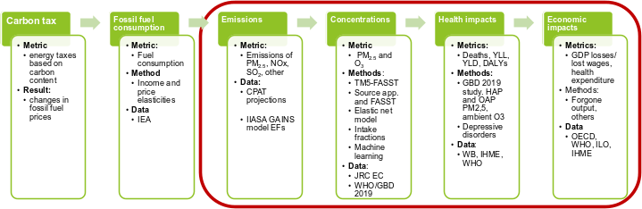
The health impacts attributable to air pollution methodology is presented in Figure 6‑2. As shown in the figure, the total health burden of pollution is estimated for the baseline scenario and for the carbon price scenario. The impact of the carbon price is then estimated as the difference between the total burden under both scenarios.
Figure ‑: Methodology for estimating health impacts of a carbon price
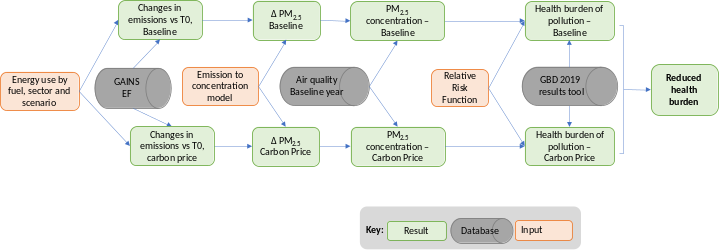
The methodological steps presented in Figure 6‑1 and Figure 6‑2 are described in the following sections. Section 2 presents the sources and methods for estimating emissions. Section 3 explains the relationship between emissions and ambient pollution. Section 4 introduces the quantification of the health burden of air pollution and Section 5 presents the quantification of the economic impacts of pollution.
6.4 Methods for calculating emissions
In this section we explain how we calculate emissions in CPAT (Mitigation tab), using as input the fuel consumption by sector and over time, and emission factors. Emissions will be used to calculate concentrations of PM2.5 and O3.
Figure ‑: Overview of CPAT methodology, highlighting Emissions
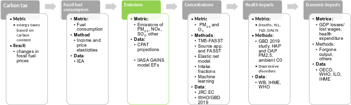
6.4.1 Data sources for emissions
Input
Source
Energy consumption by fuel and sector in time
CPAT mitigation module. Based in IEA energy balances (IEA 2019) and others. See Mitigation tab documentation.
Emission Factors
GAINS model, IIASA (Wagner et al. 2020)
Radiative coefficients
GAINS model, IIASA (Wagner et al. 2020)
6.4.2 Emission factors from GAINS
Emissions for the baseline scenario are taken from the Greenhouse Gas - Air Pollution Interactions and Synergies (GAINS) Global Model, from the International Institute for Applied Systems Analysis (IIASA). The GAINS scenario selected as baseline is the ECLIPSE_V5a_CLE_base. This dataset was created in Jun 2015 and it covers emissions from 1990 to 2050 in five-year intervals. This baseline scenario considers current legislation (CLE) and committed legislation. The emission factors were grouped to reflect CPAT sectors and fuels, as described in Wagner et al. (2020).
The basic principle to estimate emissions in GAINS is presented in expression ( 6‑1). Emissions are driven by activity levels (such as energy consumption), emissions factors that depend on the process and fuel type utilized (if any) and technology implementations that account for possible pollution control technologies (such as particulate filters, electrostatic precipitators, among many others). The emission factors used in CPAT include country specific technology implementations, according to the Current Legislation Scenario.
\(Emissions = FuelConsumption*Emission\ Factors\)
( ‑)
In CPAT, the pollutants included are PM2.5, NOx, SO2, CO2, NMVOC, BC, OC, CH4, CO, while the sectors and fuels for which we have emissions factors are presented in Table 6‑1.
Source: Own elaboration based on (Wagner et al. 2020)
The EF from the current legislation scenario will change in time, as shown in Figure 6‑4. In CPAT, the user can select the to use EFs that are variable in time or a constant value, from year 2015.
Figure ‑: Example of emission factors for SO2, for power plants in India
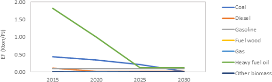
Source:Own elaboration based on(Wagner et al. 2020)
The emission factors from GAINS are country specific for 89 countries. For countries not included in that group, we consider regional averages.
Figure 6‑5 shows data quality categories for countries included in the GAINS model. In green is Category 1, for which there is high confidence in the data. In yellow is category 2, for which there is medium confidence and in red, is category 3, for which the level of confidence is low.
Figure ‑: Quality of input data. Data quality categories (QC)
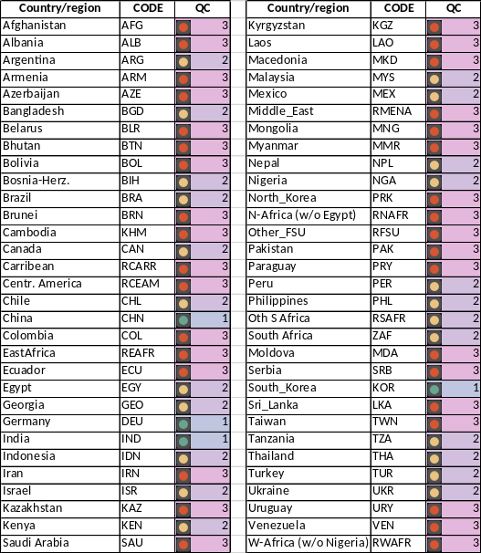
Source: Personal communication with Fabian Wagner. Category 1: High confidence, Category 2: Medium confidence Category 3: Low confidence.
6.4.3 Radiative forcing coefficients
Reducing local air pollutants will result in positive health impacts. However, the reduction of local pollutants can imply an increase in global warning, because of the cooling effect of some of these pollutants. Figure 6‑6 presents a diagram of the cooling and warming effects of reducing pollutants.
Figure ‑: Diagram of the impact of pollution control on emissions and climate impact.
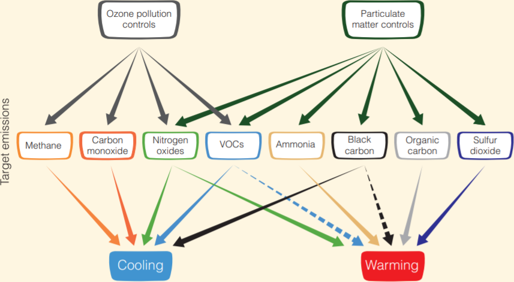
Source:(Shindell et al. 2013)5. Solid lines indicate known impact; dashed lines indicate uncertain impact.
CPAT will consider the net warming effects of reducing local pollutants, according to their Global Warming Potential in a hundred years (GWP100), using the regional values presented in Table 6‑2.
Table ‑: GWP100 coefficients used in CPAT
Region
CO
NH3
NOx
PM_BC
PM_OC
SO2
VOC
Africa
1.989
-13.332
-7.058
356.463
-121.075
-85.172
6.154
Asia & Oceania
1.989
-13.332
-7.058
356.463
-121.075
-85.172
6.154
Eurasia
3.246
-18.162
-9.501
407.156
-138.559
-109.67
7.303
Europe
3.246
-18.162
-9.501
407.156
-138.559
-109.67
7.303
Middle East
1.989
-13.332
-7.058
356.463
-121.075
-85.172
6.154
North America
1.989
-13.332
-7.058
356.463
-121.075
-85.172
6.154
Source: GAINS model, IIASA.
Besides CO2 emissions, CPAT will consider the global warming potential of methane, using the GWP100 indicated in Table 6‑3.
Substance
GWP100
Source
CH4
28.0
IPCC 5th assessment report
Table6‑3: GWP100 coefficients for CH4 used in CPAT
Source:(IPCC 2014).
A list of substances with radiative forcing impacts is presented in Table 6‑4. The table indicates which substances are included in CPAT and in the UNFCCC framework.
Table ‑: Substances with climate/radiative forcing impacts under UNFCCC and CPAT
Substance type
Substance
UNFCCC
CPAT
Greenhouse gases
CO2
✓
✓
CH4
✓
✓
N2O
✓
✕
HFCs
✓
✕
PFCs
✓
✕
SF6
✓
✕
NF3
✓
✕
Short-lived climate forcers (SLCF)
BC
✕
✓
O3 (tropospheric)
✕
✕*
CH4
✓
✓
HFCs
✓
✕
SO2
✕
✓
NOx
✕
✓
Precursors of SLCF
CO
✕
✓
NMVOC
✕
✓
SO2
✕
✓
NOx
✕
✓
NH3
✕
✕
OC
✕
✓
Source: Own elaboration. (*) CPAT includes the health effects of ambient ozone, but not emissions of ozone.
6.5 Methods to relate emissions and ambient pollution
This chapter describes the options implemented in CPAT to link emissions and ambient pollution: i) TM5-FASST model, ii) Source apportionment information combined with FASST, iii) Elastic Net model, iv) Intake fractions, and v) Machine learning.
Figure ‑: Concentration of PM2.5 and O3, CPAT methodology overview
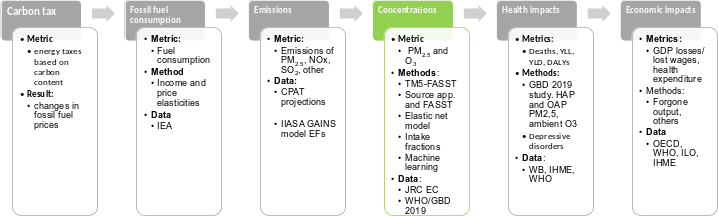
Table 6‑5 describes the aggrupation of sectors done in the air pollution tab, which in some cases differs from the sector used in the Mitigation tab.
Table ‑: Source types in the Air pollution and Mitigation modules
Air pollution aggrupation
Air pollution Subsector code
Manufacturing sub sectors
Mitigation sub sectors
Fuel used
Coal Power Plants
pow
Power
coa
Gas Power Plants
nga
Other Power Plants
oop
bio
Road transport
rod
Road
multiple
Residential, services and construction
res
Residential
multiple
cst
Construction
multiple
srv
Services
multiple
Industries and other energy
mnf
irn
Iron and steel
multiple
nfm
Non-ferrous metals
multiple
mac
Machinery
multiple
cem
Cement
multiple
ftr
Fuel transformation & transportation
multiple
mch
Mining & Chemicals
coa
omn
Other manufacturing
coa
oen
Other - energy use
multiple
ral
Rail
die
avi
Domestic Aviation*
jfu
Food & forestry
foo
Food & forestry (includes agriculture)
multiple
Source: Own elaboration. (*) considers emissions from departing and landing only
6.5.1 Data sources to relate emissions and ambient concentrations
Table ‑: Summary of data sources to relate emissions to ambient pollution
Input
Source
TM5-FASST model, from the European Commission Joint Research Center
(Van Dingenen et al. 2018)
TM5-FASST mode, downscaled at a country level
(Aleluia Reis 2020)
Elastic Net Model
(Renna, Granella, and Aleluia Reis 2021)
Machine learning models
WHO source apportionment database
(WHO 2015)
Other source apportionment studies
(World Bank 2020), (Lelieveld et al. 2015), (Almeida et al. 2020), (World Bank 2019), (Gaita et al. 2014)
Intake fractions
(Zhou et al. 2006; Apte et al. 2012)
6.5.2 Option 1: TM5-FASST
The Fast Scenario Screening Tool (FASST) is an emulator of the full TM5-CTM global chemical transport model. FASST is a source-receptor model with linearized relations between emissions and concentrations. This tool allows the modeling of ambient PM2.5 and O3 concentrations.
FASST includes 56 source-receptor regions (see Figure 6‑8) and the pollutants considered (as emissions) are SO2, NOx, NH3, OC, NMVOC, Elemental Carbon, Primary Organic Matter6, PM2.57 and CH4.
Figure ‑: The 56 continental emission source regions in TM5-FASST
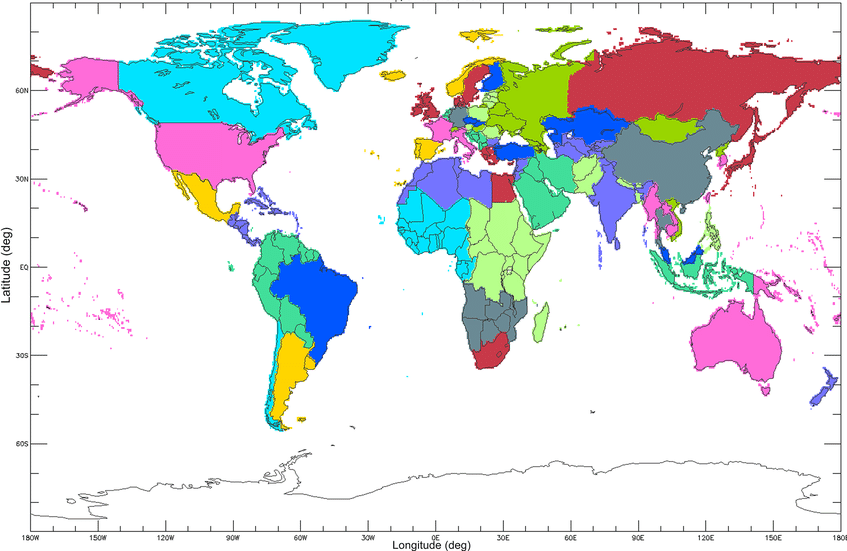
The 56 continental emission source regions in TM5-FASST. See Table S2.2 for the mapping between regions and countries.
Source:(Van Dingenen et al. 2018)
The coefficients from the source-receptor matrices are given by expression ( 6‑2) and the concentration in receptor \(y\) from component \(j\) are presented in expression ( 6‑3) (Van Dingenen et al. 2018).
\(A_{\text{ij}}\left\lbrack x,\ y \right\rbrack = \frac{\mathrm{\Delta}C_{j}(y)}{\mathrm{\Delta}E_{i}\left( x \right)}\)
( ‑)
With \(\mathrm{\Delta}E_{i}\left( x \right) = 0.2E_{i,base}\left( x \right)\)
Where:
\(A_{\text{ij}}\): Source-receptor matrix coefficient (annual mean responses) in µg/m3
\(x\): source region
\(y\): receptor point
\(j\): component (PM2.5 and O3)
\(i\): precursor of j (BC, POM, SO2, NOx and OPM for j = PM2.5; and NOx, NMVOC, SO2 and CH4 for j= O3)
Ambient concentration in receptor \(y\) from component \(j\) is calculated using expression ( 6‑3).
\(C_{j}\left( y \right) = C_{j,\ base}\left( y \right) + \sum_{k = 1}^{n_{x}}{\sum_{i = 1}^{n_{i}}{A_{\text{ij}}\left\lbrack x_{k},\ y \right\rbrack*\left\lbrack E_{i}\left( x_{k} \right) - E_{i,\ base}\left( x_{k} \right) \right\rbrack*UrbanIncFactor}}\)
( ‑)
Where:
\(A_{\text{ij}}\): Source-receptor matrix coefficient (annual mean responses)
\(n_{i}\): number of precursors \(i\)
\(n_{x}\): number of source regions \(x\)
\(E_{i}(x)\): Emission rate (kg/yr) of precursor I at source x
The precursors for PM2.5 included are BC, POM, SO2, NOx and OPM (other particulate matter). Notice that NH3 emissions are not included in the analysis and are assumed to be constant over time.
The precursors of ozone considered are NOx, NMVOC, SO2 and CH4.
As mentioned, FASST contains results for 56 regions only. To produce source-receptor coefficients for every country inside those regions, we applied a down-scaling of FASST to produce country level coefficients. The methods are described in (Aleluia Reis 2020).
In addition to the country down-scaling from (Aleluia Reis 2020), we produced a downscale based in the population in the FASST regions and in the countries inside those regions, as presented in expression ( 6‑4). In some cases we applied the population downscale, when the performance of the method described in (Aleluia Reis 2020) is low.
If we multiply the emissions \(j\) from the modeled sectors by the corresponding \(A_{i,j}\) coefficients, we obtain the “modeled” contribution to\(\text{\ i\ }\)(where \(i\) is PM2.5 or O3) in CPAT, using expression ( 6‑5).
In the spreadsheet version of FASST (provided by Rita Van Dingenen), there are two emission scenarios and each of them is compared to FASST baseline scenario (there are 3 scenarios in total). In CPAT, we do not use the FASST baseline scenario, but only two scenarios: baseline (as in CPAT) and carbon price (as in CPAT). We do not need to include the FASST baseline scenario in CPAT because to quantify the changes in PM2.5 (or in O3), attributed to the carbon tax, we subtract the results from the baseline and the carbon tax. In that operation, FASST baseline would be eliminated anyways and because of that is not needed.
The following table presents the operations in FASST spreadsheet and CPAT adaptations. In the last column of the table, I mention the “transformations” to the SR coefficients used in CPAT, so the operations are simplified. These transformations yield the same changes in PM2.5 that we would obtain using the original steps performed in the spreadsheet of FASST, because all operations are linear.
Table6‑7: CPAT adaptations of TM5-FASST, spreadsheet version.
Where \(\text{TOTdP}M_{1}\) is the change in concentration with respect to FASST Baseline.
The same procedure is applied to calculate \(\text{TOTdP}M_{2}\), using the emissions of the scenario 2. \(\text{TOTdP}M_{2}\ \) is the change in PM2.5 form scenario 2 versus FASST baseline scenario.
Then, in tab RESULTS, the change in PM2.5 among scenario 2 and scenario 1 is equal to \(\text{TOTdP}M_{2} - TOTdP1.\ \) Because all equations are linear, we do not need to use FASST baseline emissions when we want to calculate changes in PM2.5 from two scenarios in CPAT.
6.5.3 Option 2: Source apportionment information
An alternative to the previous approach is to use source apportionment information, either from the WHO Source Apportionment (WHO 2015) database or from another source. The user might have access to local studies regarding the contribution to ambient PM2.5 from different emission sources and that information could be manually entered into CPAT.
The WHO database contains source apportionment information for 317 locations in 46 countries. Figure 6‑9 presents the average contributions by sector in the regions of the world covered by the database.
Figure ‑: Average source apportionment for PM2.5, selected regions of the world
\(CHART\)
Source: WHO database on local source apportionment studies
CPAT can combine the information from source apportionment studies with the source apportionment result from applying the TM5-FASST coefficients. For each sector, we estimate an adjustment factor, \(\text{AF}_{s},\) to TM5-FASST coefficients, such that the external source contribution by sector will be met in the baseline year \(\text{to}\). The adjustment factor for each sector \(s\) is calculated as:
\(\text{AF}_{s}\): Adjustment factor for sector s (s= coal power plants, gas power plants, other power plants, ground level road, residential-construction-services, agriculture, other sectors).
\(\text{ShareFASS}T_{s}\): % Contribution to ambient PM2.5 from sector s, calculated using FASST coefficients
\(\text{ShareExterna}l_{s}\): % Contribution to ambient PM2.5 from sector s, according to user’s input or to WHO database.
The modeled ambient PM2.5 under this option in CPAT is calculated as follows.
In CPAT, we have uploaded the source apportionment information for the 46 countries included in the WHO database, as well as additional studies covering additional countries (see Table 6‑9 for the country coverage of each study). The correspondence between the sectors in the WHO database and CPAT air pollution sectors is presented in Table 6‑8.
Table ‑: Matching from WHO database sectors and CPAT air pollution tab sectors.
WHO database sectors
CPAT AP sectors
Industry
Coal Power Plants
Industry
Gas Power Plants
Industry
Other Power Plants
Traffic
Road transport
Industry / Domestic fuel burning
Residential, services and construction
Industry
Industries and other energy
Unspecified source of human origin
Food & forestry (includes agriculture)
Natural sources (dust and sea salt)
Unknown (not modeled, natural, outside borders)
Source: Own elaboration. The WHO sector “Unspecified source of human origin” includes secondary formation of PM2.5 and it’s distributed among all CPAT sectors, including the “unknown” category in the proportions of each sector calculated using FASST coefficients.
CPAT allows the user to input other source apportionment distribution (manual input) and also includes a default distribution for most countries, based in the WHO database. The default source apportionment distribution is equal to the regional average, that can be used if the country is not covered in the WHO database. The information source used is indicated in the Air pollution module, under the section “Calibration options from the Dashboard/MSTInputs tab”.
Table 6‑9 presents the country coverage of each of the studies preloaded in CPAT.
Table ‑. Countries covered by source apportionment studies in CPAT.
Study
Countries covered
(WHO 2015)
Argentina, Australia, Bangladesh, Belgium, Brazil, Canada, Chile, China, Costa Rica, Denmark, Egypt, Estonia, Finland, France, Germany, Ghana, Greece, India, Indonesia, Ireland, Italy, Japan, Korea, Kuwait, Macedonia, FYR, Malaysia, Mexico, Mongolia, Netherlands, New Zealand, Norway, Pakistan, Philippines, Poland, Portugal, Saudi Arabia, South Africa, Spain, Sri Lanka, Sweden, Switzerland, Thailand, Turkey, United Kingdom, United States, Vietnam
(World Bank 2020)
Bosnia and Herzegovina
(Almeida et al. 2020)
Greece, Kazakhstan, Hungary, Moldova, Croatia, Serbia, Albania, Bosnia and Herzegovina, Poland, Macedonia, FYR, Tajikistan
(Lelieveld et al. 2015)
China, Tukey
(World Bank 2019)
Macedonia
(Gaita et al. 2014)
Kenya (assumed same results for Rwanda)
6.5.4 Option 3: Elastic Net model and OLS model
CPAT also offers the option to apply the results of an elastic net regularization method to link emissions by sector to ambient concentrations of PM2.5 and O3 (Renna, Granella, and Aleluia Reis 2021). The ambient concentrations predicted represent population weighted averages per country. At the moment CPAT offers the elastic net model option only for PM2.5.
The results of the elastic net model are combined with an OLS model. The results of the OLS model are used only to distribute the contribution of modeled PM2.5 among CPAT sectors, while the elastic net model is used to predict total ambient concentrations of PM2.5.
The following table summarizes the data sources used to develop the elastic net and OLS models.
Table ‑: Data sources used in the elastic net and OLS models
Variable
Data source
Emissions
CAMS Global Anthropogenic v4.2, 2000-2020, monthly, 0.1°
Concentrations
CAMS Global Reanalysis (EAC4) monthly averaged fields (Inness et al. (2019)), for 2003-2019, PM2.5 and Ozone
Population
2020 UN WPP-Adjusted Population Count, v4.11, from the NASA Socioeconomic Data and
Applications Center (SEDAC) (CIESIN 2020).
Climate variables
Monthly data, 0.1 degrees resolution from TerraClimate. Variables used: precipitation, maximum temperature, minimum temperature, wind speed, vapor pressure deficit in kPa.
Wind direction from ERA-5 Reanalysis Monthly Means
Source: Based on(Renna, Granella, and Aleluia Reis 2021).
The model considers the emissions of BC, OC, NH3, SO2 and NMVOC. The sectoral aggregation of the models is the following:
AGR (Agriculture)
Agricultural waste burning
Agriculture livestock
Agriculture soils
ROA (Road transportation)
Road transportation
INX (industry)
Industrial process
POW (Energy Power generation)
Power generation
Fugitives
SER (Buildings including residential, commercial and services)
Residential and other sectors
OTR (Off-road transportation)
Off Road transportation
OTH (Others, including the emissions not considered in the sectors above)
Solid waste and wastewater
Solvents
The data sources and methods are described in more detail in (Renna, Granella, and Aleluia Reis 2021). In the next subsections we describe the implementation of the elastic net and OLS models in CPAT.
6.5.4.1 Elastic net model
As mentioned above, the elastic net model is used to predict total ambient PM2.5 in CPAT. The functional form and the adaptations made to the original coefficients of the model is detailed in the following paragraphs.
Monthly concentrations of PM2.5
The linear regressions developed to predict monthly levels of PM2.5 takes the form indicated in expression ( 6‑15) for each country.
In CPAT, we work on an annual basis, while the elastic net model was developed to predict PM2.5 in a monthly basis. Thus, we adapt the elastic net model results to predict annual concentration of PM2.5, as explain below.
Each month of the year will have a weight according to its number of days, equal to \(\varphi_{m}\). For instance, for February, it’s weight in the annual average is \(\varphi_{2} = 28/365\).
The weighted average PM2.5 will be calculated according to expression ( 6‑16).
As mentioned before, in CPAT we apply the results of an OLS model to quantify the percent contribution of each sector to ambient PM2.5, while we use the elastic net model to predict total concentrations.
The OLS model has the functional form in expression ( 6‑32).
Where \(\widehat{T_{s,m}}\) is a composite index of total normalized emissions in month \(m\) and sector \(s\). The procedure to normalize emissions is explained below.
Normalization of emissions for OLS model
For each country, let’s call normalized emissions by sector and pollutant and month, \(\widehat{E_{s,p,m}}\), that is calculated using expression ( 6‑33).
In CPAT, we do not calculate monthly emissions, but annual emissions, thus, the normalization of emissions and the index of total normalized emissions by sector considers annual emissions by sector and pollutant.
6.5.5 Option 4: Intake fractions
Another option in CPAT to relate emissions to ambient concentration of PM2.5 using intake fractions. Intake fractions were defined in Bennett et al. (2002) as the integrated incremental intake of a pollutant, summed over all exposed individuals, and occurring over a given exposure time, released from a specified source or source class, per unit of pollutant emitted. Intake fractions measure the change in population-weighted ambient concentrations of a pollutant (PM2.5 in this case) per unit of pollutant emitted (Cropper et al. 2012). Zhou et al. (2006) defined intake fractions as the fraction of material or its precursors released from a source that is eventually inhaled or ingested by a population. Intake fractions are defined by expression ( 6‑35).
Intake fractions are influenced by the emissions height, as illustrated in Figure 6‑10. Ground level emissions are usually inhaled in a mayor proportion, compared with emissions from a high stack.
Figure ‑: Illustration of Intake fraction variation according to emissions height
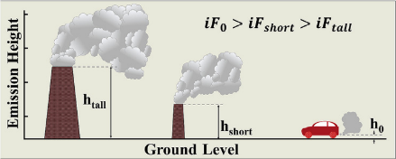
Source: Parvez, Lamancusa, and Wagstrom(2017)
At the same time, intake fractions depend on the population density at different distances from the emission source. As illustrated in Figure 6‑11, higher population concentrations will increase the intake fraction value, since more people is inhaling pollution.
Figure ‑: Illustration of intake fractions variation according to distance from the source and population concentration.
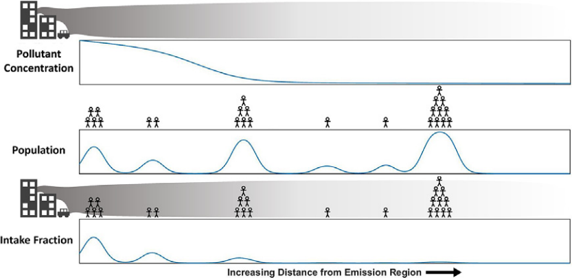
Source:(Lamancusa, Parvez, and Wagstrom 2017)
6.5.5.1 Intake fractions for ground level, low and high stack emission sources
In CPAT, for sources different than power plants, we use the results from Apte et al. (2012). The study estimates intake fractions for more than 3,600 cities, for ground level sources and for direct emissions of PM2.5.
In the case of secondary pollutants, we will scale up the ground-level secondary intake fractions from Humbert et al.(2011), presented in Table 6‑11, using the ratio between primary PM2.5 intake fractions from Apte et al. (2012) and Humbert et al.(2011), as indicated in expression ( 6‑37).
Power plants emissions are released from tall smokestacks and consequently are likely to be transported long distances. In order to include the geographically extended effect of power plants emissions into the analysis, we will use intake fractions that were developed specifically for this sector, following Zhou et al. (2006).
Zhou et al. (2006) estimates intake fractions for 29 power plants in China and proposes a methodology to calculate intake fractions in other regions of the world using population and precipitation data. The authors extrapolated the intake fraction results to other sites using regression analysis (see Table 6‑13). This methodology (Zhou et al. 2006) was applied by on the spreadsheet model developed by Parry et al. (2014) and subsequent IMF iterations.
CPAT intake fractions use updated data regarding power plant’s location and population distribution around them, together with differentiating exposed population inside country borders and outside countries. The methodology is illustrated in Figure 6‑12.
Figure ‑: Methodology for estimating intake fractions for power plants.
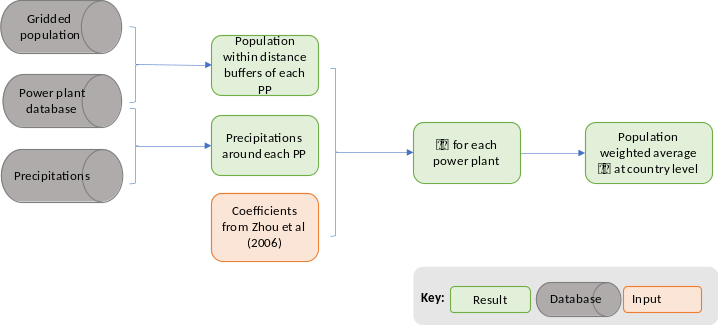
Table 6‑12 provides a comparison between the approach implemented by Parry et al. (2014) and CPAT.
Table ‑: Comparison between information sources, Parry 2014 vs CPAT
Parry 2014
CPAT
Methodology
Coefficients from Zhou 2006
Table 4
Coefficients from Zhou 2006
Table 6
Power plants data
CARMA
2009 data.
110 countries
2,400 coal plants
2,000 natural gas plants
Global Power Plant Database9 (Global Energy Observatory et al. 2018).
Updated in 2019
164 countries
2,390 coal plants
3,922 gas power plants
2,290 oil power plants
Gridded population
LandScan- 2010 Population
Earth Data10, 2020 pop (Center for International Earth Science Information Network (CIESIN) Columbia University 2018b)
Exposed population
Population within 2000 km (above 25). No distinction between inside and outside the country
Population within 2000 km (distributed in age ranges). Distinction between inside and outside (relevant for country analysis).
Precipitations
-
Precipitations
Breathing rate
20 m3/day (from Zhou 2006)
20 m3/day
Weight for averages at country level
Coal used (based on CO2 emissions)
Power generation (average years available or estimated generation). If no value for generation, then we assigned a simple average.
As indicated in the previous table, CPAT will use the Global Power Plant Database (Global Energy Observatory et al. 2018), which includes approximately 28,700 geolocated power plants in 164 countries, accounting for 80% of global installed capacity (Byers et al. 2019). The database contains 2,390 coal plants, 3,922 gas power plants and 2,290 oil power plants.
The team decided to use this database, since CARMA database has not been updated since 2012 (Byers et al. 2019). Figure 6‑13 shows, as an example, the location of the coal power plants included in the database.
Source: Based on (Global Energy Observatory et al. 2018)
Zhou et al. (2006) requires estimating population around different distances of each power plant. To estimate population inside different distance buffers, gridded population data was obtained from the Center for International Earth Science Information Network (CIESIN), from Columbia university. The population-count raster file used consists of estimates of human population (number of persons per pixel), consistent with national censuses and population registers, for the years 2000, 2005, 2010, 2015, and 2020 (CPAT analysis is based on 2020). The data set consists of global raster files at 30 arc-second horizontal resolution (approximately 1 km at the equator). The 30 arc-second12 data were aggregated to 2.5 arc-minute, 15 arc-minute, 30 arc-minute and 1 degree resolutions (Center for International Earth Science Information Network (CIESIN) Columbia University 2018a). The team decided to use this dataset, instead of Landscan 2017, since the former is available free of charge, and both sources provide equivalent quality and resolution.
The methodology in Zhou et al. (2006) allows the inclusion of the variable precipitations. Precipitations data13 was obtained from The Millennium Ecosystem Assessment (MA) Climate and Land Cover, v1 (1901 – 2000)14 (NASA Socioeconomic Data and Applications Center (SEDAC) 2005). This dataset contains raster grids for monthly average precipitations.
For each power plant we built a distance buffer of 40 kilometers and we compute the average precipitation inside that buffer. That variable is then used to predict intake fractions for each power plant, according to in Zhou et al. (2006).
The regression coefficients from Zhou et al. (2006), presented in Table 6‑13, will be used to estimate an intake fraction for each power plant in each country.
Table ‑: Coefficients for intake fractions from Zhou et al. (2006), Table 6
Pollutant \(\mathbf{j}\)
R2
\(\mathbf{\beta}_{\mathbf{1}}\) - Population within 100 km
\(\mathbf{\beta}_{\mathbf{2}}\) - Population between 100 and 500 km
\(\mathbf{\beta}_{\mathbf{3}}\) - Population between 500 and 1000 km
\(\mathbf{\beta}_{\mathbf{4}}\) - Population beyond 1000 km
\(\mathbf{\beta}_{\mathbf{5}}\) - Precipitation
SO2
0.96
9.90E-08
**
1.30E-08
**
3.00E-09
1.80E-09
**
-6.30E-10
PM1
0.96
1.50E-07
*
2.30E-08
**
1.10E-08
**
3.90E-09
**
-1.70E-09
**
PM3
0.92
1.40E-07
*
1.70E-08
**
6.40E-09
3.00E-09
**
-2.40E-09
**
PM7
0.91
9.90E-08
**
8.90E-09
*
3.10E-09
1.50E-09
*
-1.20E-09
*
PM13
0.89
6.70E-08
**
4.30E-09
9.40E-10
7.30E-10
-4.60E-10
SO4
0.95
2.40E-08
7.90E-09
*
6.90E-09
**
2.60E-09
**
-1.20E-09
**
NO3
0.93
4.30E-08
1.30E-08
**
3.50E-09
2.50E-09
**
-1.90E-09
**
Source:(Zhou et al. 2006). Notes: ** Estimate significant at 0.05 level. * Estimate significant at 0.10 level. Population variables in millions; precipitation in mm/yr
The intake fraction for each power plant is calculated according to expression ( 6‑39), using the coefficients from Table 6‑13.
Then, country level averages will be computed as the weighted average of the \(\text{iF}\) of each plant located inside the country, using as the weight the power generation15 of each power plant.
Finally, we calculate the changes in PM2.5 concentrations rearranging the terms in expression ( 6‑35), assuming that the entire population is exposed to the weighted average concentration. We also adjust the units to obtain changes in concentration in µg/m3. \(\text{CM}\) corresponds to the implied “concentration matrix” that relates changes in concentration derived from 1 ton of emissions per year.
Where \(\text{ΔC}\) is the change in ambient concentration of PM2.5, \(\text{iF}\) is a national level average intake fraction, \(\text{BR}\) is an average breathing rate and \(\text{Pop}\) is the country’s population.
6.5.6 Option 5: Machine learning
The user can also choose to use the results of a machine learning approach, developed for CPAT (Renna, Granella, and Aleluia Reis 2021). The results of the model have been approximated using a discrete function, that relates emissions perturbations to total ambient concentrations of PM2.5 and O3.
\(P_{s,p,t}\) is the perturbation compared to emissions in the baseline year, \(t_{0}\), in percentage. We use 2019 as the baseline year and all the perturbations are compared to that year, as presented in equation ( 6‑41).
Total ambient concentration is a function of \(P_{s,p,t}\), composed of a set of linear relationships, according to the level of the perturbation, as presented in expression ( 6‑42).
For the baseline year \(\text{to}\), the contribution of sector \(s\) and pollutant \(p\) to ambient PM2.5 is presented in expression ( 6‑43). The mentioned contribution is equivalent to the change in ambient PM2.5 when the emissions are reduced to cero (a -100% perturbation).
\(C_{s,p,to} = {- C}_{s,p,t}(P_{s,p,t} = - 100)\)
( ‑)
Then, the contribution in each year \(t\) of sector \(s\) and pollutant \(p\) to ambient PM2.5 is presented in expression ( 6‑44).
The change in contribution to ambient PM2.5 or Ozone is calculated by subtracting the contribution in the baseline and the contribution under the carbon policy scenario.
6.5.7 Option 6: Average between two methods
In addition to the options to relate emissions and concentrations described above, the user can select the average among two of the methods described: intake fractions (Option 4) and source-apportionment information combined with TM5-FASST method (Option 2). We added this option since every method used is subject to uncertainty and using more than one estimate will provide results in the middle range of different model estimates.
6.5.8 Modeled and total ambient pollution
In CPAT, we estimate emissions from the sectors and fuels presented in Table 6‑1 according to the methodology described in Section 6.4. Then, using one of the six options described in section 6.5, we determine the “modeled” ambient PM2.5 (or O3). The modeled concentration accounts only for fuel burning activities, but not for all ambient pollution.
Other sources of pollution (not fuel burning) include resuspended dust, sea salt, forest fires, or other transboundary sources that contribute to observed PM2.5. We assume that the sources not modeled in CPAT contribute a \(C_{0}\) level to ambient pollution. We calculate the value \(C_{0}\) for a baseline year, using expression ( 6‑45), and we assume it to remain constant across time.
Figure 6‑14 presents graphically the methodology applied: a constant \(C_{0}\) and a modeled concentration that varies in time.
Figure ‑: Illustrative example of the projection in time of ambient PM2.5 in CPAT
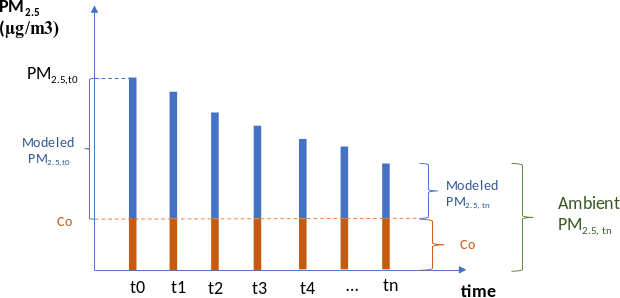
Source: Own elaboration
6.6 Methods to calculate the health burden of air pollution
This chapter describes the methodologies and data sources used to quantify the health impacts attributed to air pollution in CPAT. The health metrics described in this section, such as mortality, are the main result from the air pollution tab.
Figure ‑: Health effects, CPAT methodology overview
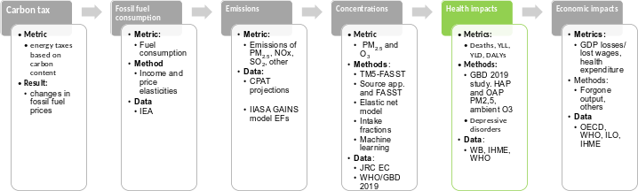
The health burden of air pollution is quantified using the methodology illustrated in Figure 6‑16. The health outcomes included in CPAT are premature mortality and disability-adjusted life years (DALYs), explained in the following sections.
Figure ‑: Methodology for estimating the health burden of pollution
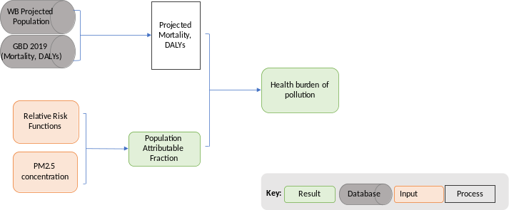
Source: Own elaboration
6.6.1 Data sources to estimate health impacts
Input
Source
Relative Risk estimates (by cause, age and exposure level)
(GBD 2019 Risk Factors Collaborators 2020)
Population projections by age group and country
WB Population Estimates and Projections16 (World Bank Group 2019). The database includes population projections by country, sex and age range by country up to 2050. It also includes the share or urban and rural populations.
Urban population fraction by country
(World Bank Group 2019)
Mortality and DALYs
GBD Results Tool (IHME 2020). Mortality and DALYs for:
WHO Country average exposure (World Health Organization 2018b)17 and GBD 2019 ambient concentrations.
Exposure to indoors PM2.5
Data from the GBD 2019 study, provided by Michael Brauer
Exposure to ozone pollution
Data from the GBD 2019 study, provided by Michael Brauer
6.6.2 Definitions of key technical terms
Relative Risk (RR) is a measure of the change in risk of an adverse health effect associated with an increase in air pollution levels. RR indicates the likelihood of developing the disease of effect in the exposed group, relative to those who are not exposed.
\(\text{RR} = \frac{y_{0}}{y_{c}}\)
( ‑)
Where:
\(y_{0}\): the risk (or probability) that people with baseline pollutant exposure will be adversely affected
\(y_{c}\): the risk (or probability) that people with control pollutant exposure will be negatively affected.
For example, a RR for all-cause mortality equal to 1.03 per 10 µg/m3 increase in annual PM2.5 means that a 10 µg/m3 increase in PM2.5 is associated with a 3% increase in deaths from all causes.
Hazard represents an instantaneous event rate or the probability that an individual would experience an event at a given point in time.
Hazard Ratio is defined as the baseline hazard (\(H_{0}\)) divided by hazard in the control group (\(H_{c}\)).
\(\text{HR} = \frac{H_{0}}{H_{c}}\)
( ‑)
Hazard ratio is often interpreted as relative risk, but they are not technically the same. The main difference is that relative risk does not consider the timing of the event but only the occurrence of the event by the end of the observation period. The hazard ratio considers both.
Incidence corresponds to the number of new cases of a given disease during a given period in a specified population. It also is used for the rate at which new events occur in a defined population. It is differentiated from prevalence, which refers to all cases, new or old, in the population at a given time18.
Prevalence is the total number of cases of a given disease in a specified population at a designated time. It is differentiated from incidence, which refers to the number of new cases in the population at a given time19.
The population attributable fraction (PAF) is the reduction in incidence that would be observed if the population were entirely unexposed, compared with its current exposure pattern. In other words, PAF is the portion of the incidence that could be reduced if causative exposure were eliminated
6.6.3 The health burden of pollution
The burden of disease associated with air pollution estimates the reduction in specific causes of death that would occur if the exposure were reduced to an alternative level (in general, the theoretical minimum risk level is used). The methodology combines information regarding population exposure to ambient air pollution and an exposure-response relationship.
Figure ‑: Method for burden of disease estimation
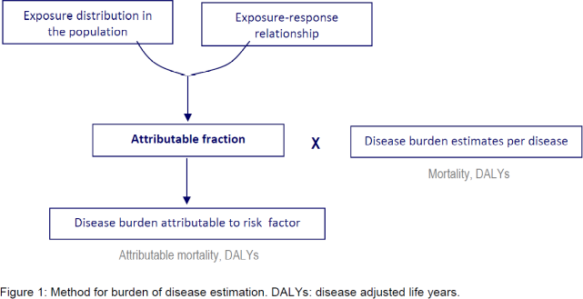
Source: (World Health Organization 2018a)
In CPAT we implemented a method to assess jointly indoors and outdoors pollution, described in Section 6.6.3.1. CPAT also calculates the impacts of ozone pollution, as described in Section 6.6.3.3.
6.6.3.1 Joint ambient and household air pollution, GBD 2019
In CPAT, we quantify the effects of air pollution following the methodology of the Global Burden of disease study for 2019 (GBD 2019 Risk Factors Collaborators 2020). The methodology uses and Integrated Exposure Response (IER) approach, basing its estimates in studies for ambient pollution, second-hand smoking and household pollution. This methodology represents and upgrade from the previous version of the study and the main differences with the previous methodology are the following:
GBD 2019 no longer uses active smoking data in the risk curves. This removes an important source of uncertainty
New studies in China and other high-exposure settings are now used20
No fixed functional form. Splines generated using MR-BRT (meta-regression boosted regression trees)
The methodology implemented in CPAT assess jointly the effects of ambient and household pollution. This feature is important because it allows the quantification of a possible increase in the use of solid fuels for cooking (leakage effects) and because household pollution is a major health problem in many countries of the world.
The relative risks used in CPAT from GBD 2019 are presented in Figure 6‑18. In the case of ischemic heart disease and stroke, the RR presented is an average across all the age groups, which are defined in buckets of 5 years21. In CPAT, we work with the following age groups: neonates, post neonates, under 15, 15 to 64 and 65 years and above. We use the average relative risk withing each group.
Figure ‑: RR from the Integrated exposure response function, GBD 2019
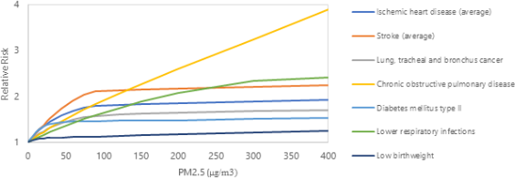
Source: Based on (GBD 2019 Risk Factors Collaborators 2020).
Notice that the relative risk takes as a reference the minimum risk level for PM2.5, TMREL, defined as uniform distribution between 2.4 and 5.9 µg/m3. In CPAT, we use as the TMREL the average between 2.4 and 5.9, equal to 4.15 µg/m3 of PM2.5. When pollution is below that level, we would obtain cero health effects attributed to pollution.
The diseases and age groups covered by the methodology in CPAT are presented in Table 6‑14.
Table ‑: Integrated Exposure Response function diseases from GBD 2019 implemented in CPAT
Source: Own elaboration. Note: GBD2019 also quantifies preterm birth24 effects attributed to pollution. We do not quantify this in CPAT, to avoid double counting of effects, when aggregating the total impacts of pollution.
The joint methodology requires the fraction of the population that it is exposed to solid fuels for cooking, \(p_{\text{HAP}}\), and the level of exposure to household air pollution (HAP), as the additional exposure over and above ambient exposure to PM2.5 (OAP).
For the proportion of the population not exposed to HAP, the relative risk is presented in expression ( 6‑51).
The population level relative risk \(RR_{\text{PM}}\) and population attributable fraction, \(\text{PA}F_{\text{PM}}\), are calculated according to expression ( 6‑53) and ( 6‑54).
\(\text{Exp}_{\text{HAP}}\): Excess exposure to PM2.5 for those who use solid fuel for cooking.
\(p_{\text{HAP}}\): proportion of the population using solid fuel for cooking
\(\text{RR}_{\text{OAP}}\): Relative risk for the proportion of the population not exposed to HAP
\(\text{RR}_{\text{HAP}}\): Relative risk for the proportion of the population exposed to HAP
\(RR_{\text{PM}}\): Population level relative risk
\(\text{PA}F_{\text{PM}}\): Population level PAF
Figure 6‑19 presents a diagram of the exposure to PM2.5, \(\text{Exp}_{\text{OAP}}\) and \(\text{Exp}_{\text{HAP}}\), and their associated relative risks levels.
Figure ‑: Diagram for relative risk due to HAP and OAP exposure.
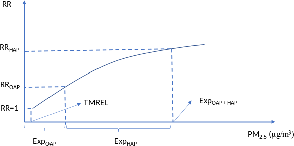
Source: Own elaboration
The Attributable burden (\(\text{AB}\)) corresponds to the number of cases attributed to the exposure in the population. The AB is calculated by multiplying PAF by the baseline number of health outcomes, for each outcome, sex and age group.
\(AB = PAF*Health\ Outcome\)
( ‑)
The strategy to quantify health effects in CPAT is presented in Appendix 6.11.3.
6.6.3.2 Health outcomes in CPAT
In CPAT, we quantify the health effects of pollution as mortality, years of life lost, years lived with disability and disability-adjusted life years (DALYs).
DALY is a summary measure which combines time lost through premature death and time lived in states of less-than-optimal health or “disability”. Figure 6‑20 presents an infographic about the DALY metric.
Figure ‑: DALY or disability-adjusted life year infographic.
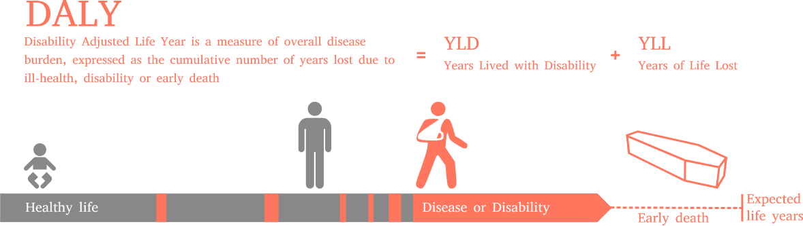
Source: (Wikimedia Commons contributors 2020)
DALY, for a specific cause \(c\), sex \(s\), age \(a\) and year \(t\) is defined as indicated in expression ( 6‑58).
The years of life lost (YLL) are calculated as the number of deaths multiplied by a loss function specifying the years lost for deaths as a function of the age at which death occurs.
Where \(L_{s,a}\) is a standard loss function specifying years of life lost for a death at age \(a\) for sex \(s\).
The years lived with disease (YLD) are measured by the multiplication of the prevalence of the condition25 and a weight factor that reflects the severity of the condition on a scale from 0 (perfect health) to 1 (death).
\(P_{c,s,a,t}\): Prevalent sequelae for cause \(c\), sex \(s\), age \(a\) and year \(t\)
\(\text{DW}_{c,s,a}\): Disability weight for sequelae for cause \(c\), sex \(s\) and age \(a\)
CPAT uses incidence at a country level for DALYs, YLL and YLD from the GBD results tool (IHME 2020).
6.6.3.3 Ozone air pollution
For ozone health effects, CPAT follows the methodology applied in the GBD 2019 study (GBD 2019 Risk Factors Collaborators 2020), which is based on (Turner et al. 2016). The health impacts are quantified for chronic obstructive pulmonary disease, with a RR of 1.06 (1.02, 1.10) per 10 ppb of ozone, in the seasonal (six-month period with the highest mean) 8-h daily maximum concentration metric (6mDMA8h). The TMREL for ozone is defined as ~ U (29.1, 35.7).
The relative risk is represented by expression ( 6‑61) and PAF is calculated using expression ( 6‑62).
\(RR = e^{\beta*{\mathrm{\Delta}C}_{O3}}\)
( ‑)
\(PAF = 1 - e^{- \beta*{\mathrm{\Delta}C}_{O3}}\)
( ‑)
The change in ozone concentration \({\mathrm{\Delta}C}_{O3}\) is obtained using the diagonal source-receptor coefficients from TM5-FASST, adjusted from region level to countries using expression ( 6‑3), from section 6.5.2; or the “machine learning” model for ozone (section 6.5.6).
Precursors of ozone considered in CPAT are NOx , NMVOC, SO2 and CH4.
6.6.3.4 Multiple risks factors
When multiple risks affect the same outcome, we need to apply a multiplicative aggregation of each individual risk, according to formula ( 6‑63).
Where \(i\) corresponds to each individual risk factor.
In CPAT, COPD is the only health outcome associated to two different risks (O3 and PM2.5 pollution). Expression ( 6‑64) presents the “corrected” PAF to consider the two risks factors, when aggregating the individual risks.
We apply the correction for multiple risks only when we need to add up the effects of PM2.5 and O3. In CPAT, this is done only when valuing (using VSL) total averted mortality.
The correction factor is calculated using expression ( 6‑65).
Adjusted total deaths attributed to PM2.5 and Ozone are calculated by multiplying the \(\text{cor}r_{\text{fact}}\) by the unadjusted O3 and PM2.5 attributed deaths.
6.6.4 Baseline exposure to air pollution data
6.6.4.1 Ambient PM2.5 Exposure data
CPAT will use population weighted average PM2.5 concentrations. In WHO databases, average concentrations are available for rural and urban areas for each country. In most countries, urban populations, in average, are exposed to higher levels of ambient PM2.5. Figure 6‑21 presents an example of urban and rural PM2.5 for a group of countries.
Figure ‑: Example of urban and rural weighted average concentrations
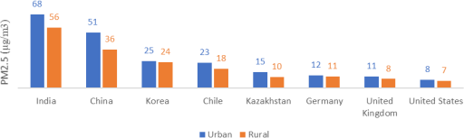
Source: (World Health Organization 2018b)
In CPAT, we also use the estimations of ambient PM2.5 from the GBD2019 study. We assume the same ratio between urban and rural concentrations levels from WHO (2018b) and the overall concentrations from GBD 2019. Figure 6‑22 presents the gridded values for ambient PM2.5 in 2019.
Figure ‑: Gridded mean of PM2.5, year 2019
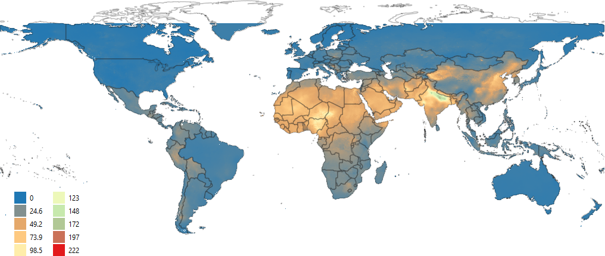
Source: Own elaboration, based on IHME data.
6.6.4.2 Household PM2.5 Exposure data
As we mentioned before, in CPAT we estimate jointly the impacts of ambient and household pollution. To do so, we need to know the share of the population exposed to household pollution and the exposure level to household PM2.5. We again draw upon data from the GBD 2019 study.
Figure 6‑23 a) shows the estimated evolution in the share of the population exposed to household pollution in time, while Figure 6‑23 b) presents the exposure level, in addition to the OAP exposure, for the World Bank regions. For the baseline scenario, we assume that the share of the population exposed, and the exposure level will be constant in time, and equal to the estimated value for 2019.
Figure ‑: Share of population exposed to household air pollution and Level of additional population exposure to household air pollution
Share of population exposed to household air pollution
Level of additional population exposure to household air pollution
[CHART]
[CHART]
Source: IHME/GBD, provided by Michel Brauer
6.6.4.3 Ozone Exposure data
As mentioned before, we use the seasonal 8 hours maximum daily value to estimate the health effects of ambient ozone pollution. Figure 6‑24 presents the gridded concentrations estimated for 2019.
Figure ‑: Gridded concentrations of O3, year 2019 (6mDMA8h)
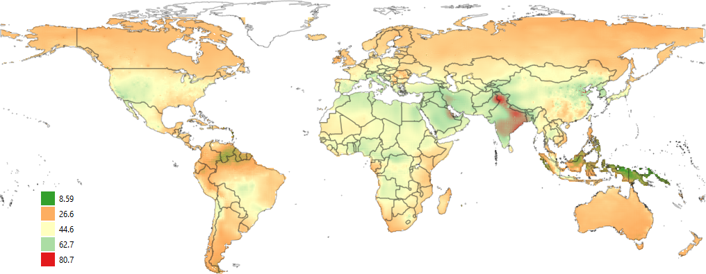
Source: Own elaboration, based on data provided by Michael Brauer
6.6.5 Leakage to biomass
Carbon pricing to formal fuels could potentially lead to an increase in the use of solid fuels26 for cooking. This is called a “leakage” effect and could increase both household and ambient pollution. Figure 6‑25 illustrates the carbon pricing effects on fuels consumption.
Figure ‑: Illustration of the impact on carbon pricing in the consumption of fuels
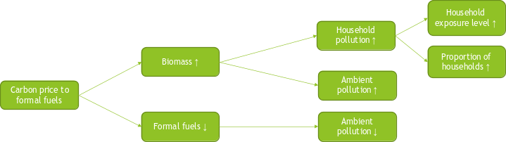
Source: Own elaboration
The demand for fuels, including the demand for biomass for cooking is calculated in the Mitigation tab in CPAT. For details on energy demand calculations, please refer to the Mitigation tab documentation.
As illustrated in Figure 6‑25, the leakage into informal fuels could increase the proportion of households exposed to HAP, the level of exposure to HAP and OAP. The assumption for OAP is that 100% of indoor emissions are eventually incorporated into ambient air (Chafe et al. 2015). These ambient emissions are converted into ambient pollution using the methodology selected by the user, as described in section 6.5.
Regarding the indoors effect of solid fuel use, the total leakage is divided in a fraction that increases the proportion of households and a fraction that increases the level of household pollution.
In CPAT, the defaults assumptions are that 50% of the increase in informal fuels consumption goes to additional household consuming solid fuels and 50% to increased consumption within households that were already using solid fuels.
In many countries is estimated that 90% of households or more use solid fuels for cooking. To make sure that the final proportion of households that uses solid fuels for cooking, after leakage is considered, is less than 100% (or another maximum value defined by the user), we adjust the fraction of the leakage that goes into the proportion of households. Expression ( 6‑66) corresponds to the final proportion of households that uses solid fuels for cooking before adjustments. Expression ( 6‑67) is the adjusted fraction in case the new share of households using solid fuels is higher than the maximum defined. Expression ( 6‑68) is the final proportion of households using solid fuels for cooking.
6.6.6.1 Post neonatal mortality, using Woodruff et al. 2006.
In CPAT, it’s possible to quantify post neonatal mortality (deaths after the first month and up to 1 year of life) using Woodruff, Parker, and Schoendorf (2006). This logistic function is presented in expression ( 6‑69), its applied to ambient PM2.5, to all-cause mortality and its parameters are β=0.006765865, with σ=0.007338828.
Another effect of ambient air pollution included in CPAT is depressive disorders. Braithwaite et al. (2019) develops a metanalysis of studies linking long-term PM exposure and depression. The author develops a log-linear exposure-response function and uses a counterfactual value of 10 µg/m3 for the UK and of 25 µg/m3 for global scenario. In the meta-analysis, the pooled odds ratio for the association between long-term PM2.5 exposure and depression prevalence obtained was 1.102 per 10 µg/m3 (95% CI: 1.023, 1.189; p=0:011), indicating that higher PM2.5 exposure is associated with higher odds of depression.
They treat pooled ORs as equivalent to RRs. The relative risk can be calculated according to expression ( 6‑70)
Where \(OR_{10}\) denotes the OR per 10 µg/m3 increment in PM2.5 exposure.
In CPAT, the counterfactual level, \({PM2.5}_{\text{counterfactual}}\) used is 25 µg/m3.
6.7 Methods to quantify the economic impacts of air pollution
In this section we describe the economic impacts of pollution included in CPAT. The metrics included are working days lost due to pollution, output losses due to mortality and morbidity, and health expenditure. We also explain how we value averted mortality, using a transferred VSL, the time structure of averted deaths and the valuation of travel time saved (used in CPAT Transport tab).
(OECD 2012), (Narain and Sall 2016), (OECD 2021) and (OECD n.d.)
Time structure of averted deaths
(US EPA 2013)
Travel time saved
(International Road Federation 2018), (Robinson et al. 2019), Tomtom’s data.
6.7.2 Working days lost
Work absenteeism has direct costs because of wage losses and replacement costs, and indirect costs in productivity, due to delayed work and possible interference with the work performed by co-workers and supervisors.
Figure ‑: Work absenteeism due to illness
\(CHART\)
Source: (OECD 2020) and (WHO 2019)
In CPAT, we quantify working days lost attributed to pollution following Ostro (1987). This methodology has been implemented in more recent literature, such as Holland (2014) and (IIASA 2017). OECD research (OECD 2016) and (OECD 2019) has also been based indirectly in Ostro (1987) but referencing the work from Holland (2014).
The baseline absenteeism from work due to illness data used are the OECD database “Absence from work due to illness” (OECD 2020) that covers 46 countries28 and “Absenteeism from work due to illness”29 from the WHO (WHO 2019). Figure 6‑27 presents the data from the observed databases.
Since not every country is covered in the databases, we adopt the following assumptions for obtaining baseline absenteeism at a country level:
If the country in included in the OECD database, we use OECD data.
If no OECD data is available, but WHO data includes the country, we use WHO adjusted by “employment to total population ratio, 15+” (ILO n.d.).
If no country specific data is available, we use the average value among countries with the same income level.
For low-income countries (that are not represented in either database), we use the average from lower middle-income countries.
To calculate the share of work absenteeism due to illness that can be attributed to ambient PM2.5 pollution, we use the methodology from Ostro (1987). The study developed a log-linear function with \(\beta = 0.0046\ \)and \(\sigma_{\beta} = 0.00036\ .\) The attributable fraction of working days lost due to pollution is calculated using expression ( 6‑71) and the total number of days lost due to pollution is given by expression ( 6‑72).
We consider working population from 15 to 64 years old, as in (IIASA 2017).
6.7.3 Market output losses
In CPAT, we quantify market output losses using mortality and years lived with disability (YLD) attributed to pollution, following the methodology in (Pandey et al. 2021) . The methodology followed is presented in the following paragraphs.
Average GDP contribution by worker
Expression ( 6‑74) presents the expected value of GDP per worker in a given year, that we will use to quantify GDP losses due to pollution.
\(\text{PV}_{\text{ij}}:\ \)present discounted value of lost market and non-market output for a person of age j in state i who dies in a certain year
\(g\): growth rate of GDP per worker
πij,t: is the probability that a person of age j in state i survives to age t
\(r\): discount rate
In CPAT,\(W_{ij,t} = W_{p}\)(does not change by age or within countries). We will also consider only deaths up to 64, neglecting work force above 65. These assumptions, together with assuming\(\text{hp}\)=0, allow us to rewrite expression ( 6‑77) as expression ( 6‑78).
With \(D_{\text{ij}}\) the number of deaths attributed to air pollution in state \(i\) of age \(\text{j.}\)
GDP loss due to air pollution morbidity
In CPAT, we estimate the years lived with disability due to pollution (see section6.6.3.2). We value those years, in which people in working age are not able to work, or the output loss associated with morbidity using expression ( 6‑81).
\(M\text{ij}\ = \ \ Wij*\text{YLD}\text{ij}\)
( ‑)
Table 6‑16 presents the data sources used for the parameters needed to quantify output losses.
Table ‑: Data sources used for the different productivity parameters
Parameter
Data sources
α
Labor’s share of GDP
(Guerriero 2019), includes 117 countries.
IF there isn’t data available for a country, we use the world’s average labor share of GDP, of 65%.
Yi
GDP
World Bank national accounts data, and OECD National Accounts data files
\[\frac{L_{\text{it}}}{N_{\text{it}}}\]
Labour to population
Employment to population ratio, 15+, total (%) (modeled ILO estimate), International Labour Organization, ILOSTAT database. Data retrieved in April 2019
Lit
Number or persons that are employed
L = LaborForcetotal * (1 − unemployment)
Labor force30 derived using data from International Labour Organization, ILOSTAT database and World Bank population estimates. Labor data retrieved in April 2019.
Unemployment from International Labour Organization, ILOSTAT database. Data retrieved in April 2019.
hp
Household production
Not included in CPAT
πij,t
Probability of survival
The probability of survival is the probability that an individual would have survived to each future year of his working life.
The probability of death31 is obtained from (Global Burden of Disease Collaborative Network 2018) for every country and age group. The probability of survival up to 64 years is calculated as follows:
SDG indicator 8.2.1 - Annual growth rate of output per worker (GDP constant 2010 US $) (%)
After 2023, we assume a growth rate equal to the rate in 2023.
r
Discount rate
CPAT allows the user to select among 3 options: i) Use the real interest rate for the country, ii) Using a 3% discount rate, as recommended in (Robinson, Hammitt, and O’Keeffe 2019), iii) Input manually a discount rate.
In case the user selects the first option, r will be the real interest rate33 (%) from the International Monetary Fund, International Financial Statistics and data files using World Bank data on the GDP deflator34. That data covers 127 countries.
Data is available up to 2018. After 2018, it’s assumed an interest rate equal to the average of the rates between 2014 and 2018.
6.7.3.1 CPAT operationalization
From the GBD Results Tool, we obtained deaths probabilities for five-years buckets. For instance, we know the probability of dying between 25 to 29 years old (\(d_{25,29}\)). The probability \(d_{25,29}\) is equal to the sum of the probability of dying at 25, at 26, at 27, at 28 and at 29 years old, as shown in expression ( 6‑82).
For simplicity and to keep the file size at a reasonable level, we will assume that the probability of dying at every age contained in each bucket is the same, and equal to the bucket dying probability divided by 5, as presented in expression ( 6‑83).
To implement expression ( 6‑79), let’s do \(\left( \frac{1 + g}{1 + r} \right) = a\). Then, expression ( 6‑79) operationalized for 5 years bucket in CPAT is presented in expression ( 6‑85).
In CPAT, we use total expected health expenditure from 2017 to 2050 from the IHME (Global Burden of Disease Health Financing Collaborator Network 2019a).
We follow Preker et al. (2016) to estimate the share of total health expenditure than can be attributed to pollution. The assumption is a constant expenditure per DALY (Disability adjusted life years).
In CPAT, we calculate the share of the total burden of disease that’s attributed to the 6 main causes related to pollution, using data from the GBD Results Tool (IHME 2020). The share of the burden of disease for disease \(d\), country \(\text{c\ }\)and year \(t\), \(\% BoD_{d,c,t}\), is calculated according to expression ( 6‑88).
\(\text{PA}F_{d,t}\): population attributable fraction for disease \(d\) in year t
\(\text{TH}E_{c,t}\): Total health expenditure for country \(t\) in year \(t\)
\(\text{DALY}s_{d,c,t}\): Disability adjusted life years, for disease d, country c and year t.
In CPAT, we distribute health expenditure between government, prepaid private, out-of-pocket and development assistance for health using IHME estimations for 2019 (Global Burden of Disease Health Financing Collaborator Network 2019a).
6.7.5 Value of the statistical life
In CPAT, we value averted mortality using the value of the statistical life or VSL. It’s important to notice that the VSL does not represent the value of individual lives. Rather, the VSL is a measure of the rate at which individuals are willing to exchange money to reduce small risks of death within a certain period of time. This concept is used in benefit-cost analyses, and we include it in CPAT to assign a monetary value to averted mortality due to a carbon price policy.
The VSL can be transferred following the methodology from (OECD 2012; Narain and Sall 2016), according to expression ( 6‑90).
Finally, we convert the VSL from 2011 dollars to dollars in the “Results Year” (equal to 2019), using the 2019 price deflator for the country of destiny.
In CPAT, Income elasticity is assumed equal to 0.8 for high-income countries and 1.2 for middle and low-income countries. The user can also input manually a different elasticity and a different VSL value in the Advanced tab of CPAT.
Table 6‑17 and Table 6‑18 present the values assumed to transfer the VSL from OECD countries.
Table ‑: Assumptions and data sources for VSL transfer
Variable
Assumption
Source
VSLOECD, 2005
3 million USD in 2005, in 2005 PPP dollars
Table 6.1, (OECD 2012)
b
0.8 for high income countries
1.2 for middle and low-income countries
(Narain and Sall 2016)
Table ‑: Consumer price index and GDP per capita, OECD countries
Year
CPI OECD
GDP per head of population OECD (2011 $US PPP)
2005
82.0
35,407.8
2006
84.1
36,248.1
2007
86.2
36,921.0
2008
89.4
36,738.5
2009
89.9
35,198.6
2010
91.5
36,011.9
2011
94.1
36,554.1
2012
96.2
36,813.9
2013
97.7
37,130.2
2014
99.4
37,696.5
2015
100.0
38,413.8
2016
101.1
38,859.1
2017
103.4
39,589.2
Source: (OECD 2021) and (OECD n.d.).
6.7.6 Time Structure of averted deaths
When quantifying and valuing premature mortality, it is often assumed that there is a “cessation lag,” or time distribution of averted mortality after a reduction in exposure (US EPA 2013). The time structure we selected assumes that 30% of mortality reductions occur during the first year, 50% occurs over years 2 to 5 and 20% over years 6 to 20, after the PM2.5 reduction takes place.
When valuing averted mortality using the value of statistical life (VSL), it is possible to calculate the present value of the benefit from reduced premature deaths by applying the discount rate to the number of deaths themselves and then multiplying by the VSL. In CPAT, the user can select the discount rate among 3 options: i) a discount rate of 3%, consistent with the recommendation in Robinson et al. (Robinson et al. 2019); ii) a discount rate that represent the interest rate paid by the country’s government and iii) a manual input of discount rate. When using a 3% discount rate, the present value of premature deaths reduced is 0.906 times the number of undiscounted premature averted deaths. When using a higher discount rate, for example a rate of 8%, the factor is reduced to 0.798 (see Table 6‑19).
Table ‑: Time distribution of averted premature deaths
Excess travel time is one of the consequences of road congestion. In CPAT, we estimate excess travel time, increased road damage, increased injuries, and additional vehicle operating costs attributable to congestion. The methodology used is described in the document Road Transport documentation. Here we only describe the methodology used to quantify changes in travel time, in time units, with respect to free a flow condition.
We estimate travel time per vehicle-kilometer in free flow and in congested conditions for 416 cities in 57 countries, using TomTom data (see equations ( 6‑95) and ( 6‑94)). The time domain used is “All Days Full Day”.
Congestion travel time per vehicle-kilometer, \(CongestionTT,\) is calculated using expression ( 6‑94).
\(\text{TotalVehicleKM}\) corresponds to the multiplication of the number of vehicles and the average distance traveled and is reported in the TomTom database.
The travel time per vehicle-kilometer under free flow conditions is calculated using expression ( 6‑95).
Where \(\text{CI}\) is the average congestion index in 2019.
We estimate vehicle-kilometers traveled per capita using total vehicle-kilometers from the World Road Statistics data (International Road Federation 2018) and countries total population (World Bank Group 2019). For those countries not included in the WRS database, we assume the average vehicle-kilometers traveled per capita between the regional mean and the income level mean.
Using vehicle-kilometers traveled per capita, together with the congestion index \(\text{CI}\) and the free flow travel time, we can estimate total travel time each year \(t\), in time units, using expression ( 6‑96).
In CPAT, there are estimations for the congestion index for each year, under the baseline scenario and a carbon price scenario. Using the expression ( 6‑96) we can quantify travel time for each year under each scenario. Time savings attributed to a carbon price are equal travel time in the baseline minus travel time in the carbon price scenario.
We value those time savings following (Robinson et al. 2019). We value travel time at a rate of 50% the after-tax wage rate. We use gross earnings35 data from ILO and then we apply a factor to estimate after-tax wages. The factor used for OECD countries is the “average income tax rate as % of gross wage earnings”. For other countries, we use the average factor from OECD countries, equal to 16%. When we value travel time savings, we do so by considering only the population above 15 years old, since younger population does not participate in the labor market.
Some implied assumptions: We assume that free flow travel time and vehicle-kilometers traveled per capita are constant in time. Vehicle-kilometers traveled are the same across the population, regardless of age or other considerations. Tomtom’s data is representative of vehicles not using their devices.
6.7.8 Value of morbidity using years lived with disabilities (YLDs)
Another approach to value morbidity in CPAT in based on a method proposed in World Bank Group (2022). Under this method, we convert YLDs to ‘annual disease days’ \(M\) and we value them using a fraction of a country’s daily wage.
First, annual disease days are calculated from YLDs, for each country as:
\(DW_{c}\) : Average disability weight of disease c attributed to PM2.5
The cost of a day lived with a disease \(c\), \(c_{c}\), is calculated a fraction of the daily wage \(w\) (in each country), as presented in equation XX. The term D corresponds is set at 0.4, and is associated to the disability weight of a severe condition, with severely restricted work and leisure activity and a substantial medical cost.
\(c_{c} = w*\frac{DW_{c}}{D}\)
( 6‑98)
The average daily wage, \(w\), was calculated using the methodology explained in section 6.7.3.
Finally, the cost of morbidity is calculated as the multiplication of annual disease days and the cost of each day lived with disease.
Using this method to value morbidity attributed to air pollution, we calculate the share of morbidity costs as a share of mortality costs.
6.7.9 Air pollution externalities per unit of fuel
The health impacts attributed to air pollution are calculated jointly for ambient and household pollution (see section 6.6.3), following the methodology from the GBD 2019 study (GBD 2019 Risk Factors Collaborators 2020). Although the health impacts are estimated jointly, we compute an average externally cost per unit of fossil fuel burnt, which affects only ambient pollution.
After the health impacts have already been quantified, the air pollution externality computation is made as follows:
We compute the average ambient air pollution attributed mortality per µg/m3 of PM2.5 as total mortality attributed to ambient PM2.5 in a certain year (referred to as “attributable burden” in previous chapters) divided by the total ambient PM2.5 that year.
Using the emission factor (for each fuel and sector, for each country) and the emissions-to-concentrations model selected, we compute the ambient PM2.5 contributed by one unit of fuel used (in µg/m3 of PM2.5 per ktoe).
We multiply the average ambient air pollution attributed mortality per µg/m3 (step 1) with the ambient PM2.5 contributed by one unit of fuel used (step 2), obtaining the number of attributed deaths by unit of fuel used (deaths/ktoe).
We multiply the metric calculated in step 3 with the VSL for the corresponding year and country, obtaining the externality value in dollars per ktoe. We add to this number morbidity costs (for ambient air pollution), according to the methodology described in section 6.7.8.
We convert energy units to express the externality in a commonly used metric for each fuel, considering the relevant calorific values in each country and fuels densities when needed. For instance, for gasoline, the externality is expressed as US$ per liter, while, for coal, the externality is expressed as US$ per GJ.
6.8 Validation: comparison with other models
6.8.1 Health impacts of pollution
In the following figures, we compare CPAT results with external models. Green dots represent CPAT results, and the blue line represents the results from the external model. When the green dots are above the blue line (45 degrees line), CPAT estimates are higher, and when the green dots are below the line, CPAT estimates are lower.
Figure ‑: CPAT estimation of ambient PM2.5 air pollution death rates versus GBD2019 estimates.
\(CHART\)
Source: CPAT results and (GBD 2019 Risk Factors Collaborators 2020).
6.8.2 Emissions
Figure ‑: PM2.5 emissions in the transport sector, CPAT 2020 versus EDGAR 2015 and IIASA 2020
\(CHART\)
Source: CPAT results, (European Environment Agency 2020) and (IIASA 2015).
Figure ‑: PM2.5 emissions in the power sector, CPAT 2020 versus EDGAR 2015 and IIASA 2020
\(CHART\)
Source: CPAT results, (European Environment Agency 2020) and (IIASA 2015).
6.8.3 Concentrations: share of fossil fuels on ambient PM2.5
Figure ‑. Comparison of the share of fossil fuels contribution to ambient PM2.5 from Vohra et. al 202136 and CPAT “Avg. iF and LS FASST” (Option 6 in this documentation).
\(CHART\)
Source: Own elaboration. Note: Vohra et al. (2021) share of FF contribution to ambient PM2.5 if higher than in CPAT for 61% of countries
Figure ‑. Comparison of the share of fossil fuels contribution to ambient PM2.5 from Vohra et. al 2021 and CPAT “Machine Learning” (Option 5 in this documentation).
\(CHART\)
Source: Own elaboration. Note: Vohra et al. (2021) share of FF contribution to ambient PM2.5 if higher than in CPAT for 55% of countries
Figure ‑. Comparison of the share of fossil fuels contribution to ambient PM2.5 from Vohra et. al 2021 and CPAT “Local Study-FASST” (Option 2 in this documentation).
\(CHART\)
Source: Own elaboration. Note: Vohra et al. (2021) share of FF contribution to ambient PM2.5 if higher than in CPAT for 44% of countries
Figure ‑. Comparison of the share of fossil fuels contribution to ambient PM2.5 from Vohra et. al 2021 and CPAT “Intake fractions” (Option 4 in this documentation).
\(CHART\)
Figure ‑. Modeled contribution of fossil fuels to ambient PM2.5. Vohra et al. 2019 versus CPAT (average among 6 options to relate emissions and concentrations).
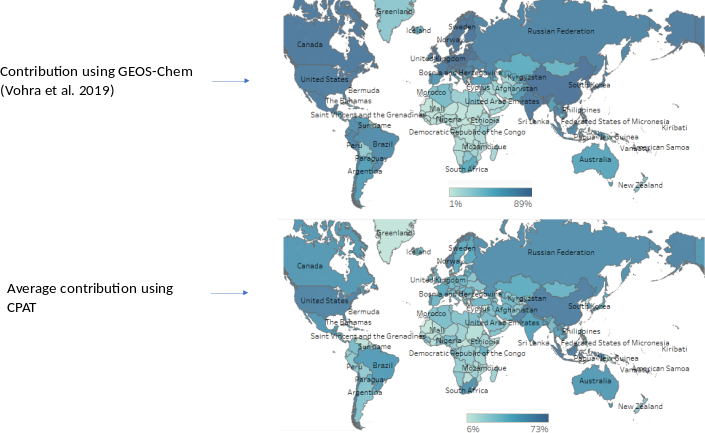
6.8.4 Externalities from pollution
Figure ‑. Comparison among CPAT results and Delft 202237
\(CHART\)
6.9 Caveats
The health impacts are calculated using global relative risk functions and global data bases regarding exposure to pollution, baseline incidence and others. Global databases are constructed using country level databases, but in many cases, they are adjusted and standardized. This may lead to differences among the data used in CPAT and local databases. If differences among CPAT and local data is an issue, an advanced Excel user could modify any inputs in CPAT, since the spreadsheet is open, but this would require a deep understanding of the tool.
Another issue to be aware of is the national and yearly scope of CPAT. This can be a limitation of CPAT analysis because the dynamics of air pollution can vary widely inside countries and throughout the year. CPAT intends to represent population weighted average air pollution for average pollution during a calendar year.
Another caveat is the uncertainty on the calculation of emissions, the relationship between emissions and ambient concentration, the health impacts and the economic values used to monetize the impacts of pollution. CPAT at the time is providing a central estimate for all calculations, without indicating uncertainty on estimations. This caveat could be partially addressed by using the “MT tool” (described in the user guide) to do a sensitivity analysis on the assumptions used.
It is important to consider that, even though CPAT performs well when compared to other more complex models, this does not guarantee that CPAT results will always be consistent with other more advance models. We have compared baseline estimates with external global sources, to make sure that we represent the baseline properly. Many checks have been performed in the Mitigation module too, which results drive the air pollution results. These checks do not guarantee that the policy impacts obtained using CPAT will be similar to those obtained from other more complex models. Further checks will need to be performed in a policy/country-specific context. CPAT allows the user to change assumptions and inputs, such that the tool can be adjusted properly when needed.
Overall, the results from the air pollution in CPAT are conservative in the sense the results are likely underestimating the health impacts of a climate policy. This is the case in big part because the default configuration of the air pollution variables yields conservative contribution from fossil fuels to air pollution. The user can change the predefined options and calibrate the tool to make the results consistent with other sources of information available.
6.10 References
Aleluia Reis, Lara. 2020. “Down-Scaling FASST(R) to Country Level.”Almeida, S. M., M. Manousakas, E. Diapouli, Z. Kertesz, L. Samek, E. Hristova, K. Šega, et al. 2020. “Ambient Particulate Matter Source Apportionment Using Receptor Modelling in European and Central Asia Urban Areas.” Environmental Pollution 266 (November): 115199. https://doi.org/10.1016/J.ENVPOL.2020.115199.Apte, Joshua, Emilie Bombrun, Julian Marshall, and William Nazaroff. 2012. “Global Intraurban Intake Fractions for Primary Air Pollutants from Vehicles and Other Distributed Sources.” Environmental Science and Technology 46 (6): 3415–23. https://doi.org/10.1021/es204021h.Bennett, Deborah, Thomas McKone, John Evans, William Nazaroff, Manuele Margni, Olivier Jolliet, and Kirk Smith. 2002. “Defining Intake Fraction.” Environmental Science & Technology 36 (9): 207A-211A. http://www.ncbi.nlm.nih.gov/pubmed/12026996.Braithwaite, Isobel, Shuo Zhang, James Kirkbride, David Osborn, and Joseph Hayes. 2019. “Air Pollution (Particulate Matter) Exposure and Associations with Depression, Anxiety, Bipolar, Psychosis and Suicide Risk: A Systematic Review and Meta-Analysis.” Environmental Health Perspectives 127 (12): 126002. https://doi.org/10.1289/EHP4595.Byers, Logan, Johannes Friedrich, Roman Hennig, Aaron Kressig, Colin Mccormick, and Laura Malaguzzi Valeri. 2019. “A GLOBAL DATABASE OF POWER PLANTS.” Washington DC. http://globalenergyobservatory.org.Center for International Earth Science Information Network (CIESIN) Columbia University. 2018a. “Documentation for the Gridded Population of the World, Version 4 (GPWv4), Revision 11 Data Sets.” Palisades NY. https://doi.org/https://doi.org/10.7927/H45Q4T5F.———. 2018b. “Gridded Population of the World, Version 4 (GPWv4): Population Count, Revision 11.” Palisades,NY: NASA Socioeconomic Data and Applications Center (SEDAC). https://doi.org/https://doi.org/10.7927/H4JW8BX5.Chafe, Zoë, Michael Brauer, Zbigniew Klimont, Rita Van Dingenen, Sumi Mehta, Shilpa Rao, Keywan Riahi, Frank Dentener, and Kirk Smith. 2015. “Household Cooking with Solid Fuels Contributes to Ambient PM2.5 Air Pollution and the Burden of Disease.” Environmental Health Perspectives 122 (12): 1314–20. https://doi.org/10.1289/ehp.1206340.Cropper, Maureen, Shama Gamkhar, Kabir Malik, Alex Limonov, and Ian Partridge. 2012. “The Health Effects of Coal Electricity Generation in India.” https://www.rff.org/publications/working-papers/the-health-effects-of-coal-electricity-generation-in-india/.Dingenen, Rita Van, Frank Dentener, Monica Crippa, Joana Leitao, Elina Marmer, Shilpa Rao, Efisio Solazzo, and Luana Valentini. 2018. “TM5-FASST: A Global Atmospheric Source–Receptor Model for Rapid Impact Analysis of Emission Changes on Air Quality and Short-Lived Climate Pollutants.” Atmospheric Chemistry and Physics 18 (21): 16173–211. https://doi.org/10.5194/acp-18-16173-2018.European Environment Agency. 2020. “Emission Database for Global Atmospheric Research (EDGAR).” 2020. http://edgar.jrc.ec.europa.eu/.Gaita, S. M., J. Boman, M. J. Gatari, J. B.C. Pettersson, and S. Janhäll. 2014. “Source Apportionment and Seasonal Variation of PM2.5 in a Sub-Saharan African City: Nairobi, Kenya.” Atmospheric Chemistry and Physics 14 (18): 9977–91. https://doi.org/10.5194/ACP-14-9977-2014.GBD 2019 Risk Factors Collaborators. 2020. “Global Burden of 87 Risk Factors in 204 Countries and Territories, 1990-2019: A Systematic Analysis for the Global Burden of Disease Study 2019.” The Lancet. Vol. 396. Elsevier. https://doi.org/10.1016/S0140-6736(20)30752-2.Global Burden of Disease Collaborative Network. 2018. “Global Burden of Disease Study 2017 (GBD 2017) Life Tables 1950-2017.” Seattle, United States: Institute for Health Metrics and Evaluation (IHME). http://ghdx.healthdata.org/record/ihme-data/gbd-2017-life-tables-1950-2017.Global Burden of Disease Health Financing Collaborator Network. 2019a. “Global Expected Health Spending 2017-2050.” Seattle, United States: Institute for Health Metrics and Evaluation. http://ghdx.healthdata.org/record/ihme-data/global-expected-health-spending-2017-2050.———. 2019b. “Global Health Spending 1995-2016.” Seattle, United States. http://ghdx.healthdata.org/record/ihme-data/global-health-spending-1995-2016.Global Energy Observatory, Google, KTH Royal Institute of Technology in Stockholm, Enipedia, and World Resources Institute. 2018. “Global Power Plant Database.” A Global Database of Power Plants. 2018. http://datasets.wri.org/dataset/globalpowerplantdatabase.Guerriero, Marta. 2019. “THE LABOR SHARE OF INCOME AROUND THE WORLD: EVIDENCE FROM A PANEL DATASET.” 920. ADBI Working Paper Series. https://www.adb.org/publications/labor-share-income-around-world-evidence-panel-dataset.Holland, Mike. 2014. “CBA for the Clean Air Policy Package Cost-Benefit Analysis of Final Policy Scenarios for the EU Clean Air Package Version 2 Corresponding to IIASA TSAP Report No. 11, Version 2.”Humbert, Sebastien, Julian Marshall, Shanna Shaked, Joseph Spadaro, Yurika Nishioka, Philipp Preiss, Thomas McKone, Arpad Horvath, and Olivier Jolliet. 2011. “Intake Fraction for Particulate Matter: Recommendations for Life Cycle Impact Assessment.” Environmental Science & Technology TA - TT - 45 (11): 4808. https://pubmed.ncbi.nlm.nih.gov/21563817/.IEA. 2019. “Extended World Energy Balances.” IEA World Energy Statistics and Balances (database). 2019.IHME. 2020. “GBD Results Tool.” 2020. http://ghdx.healthdata.org/gbd-results-tool.IIASA. 2015. “ECLIPSE V5a Global Emission Fields - Global Emissions.” 2015. https://iiasa.ac.at/web/home/research/researchPrograms/air/ECLIPSEv5a.html.———. 2017. “COSTS, BENEFITS AND ECONOMIC IMPACTS OF THE EU CLEAN AIR STRATEGY AND THEIR IMPLICATIONS ON INNOVATION AND COMPETITIVENESS .” http://gains.iiasa.ac.at.ILO. n.d. “Employment to Population Ratio, 15+, Total (%) (Modeled ILO Estimate).” Accessed March 20, 2020. https://data.worldbank.org/indicator/SL.EMP.TOTL.SP.ZS?view=chart.International Energy Agency. 2019. “Energy Prices and Taxes For OECD Countries, 4th Quarter 2019, Database Documentation.”International Road Federation. 2018. World Road Statistics. International Road Federation.IPCC. 2014. “Climate Change 2014: Synthesis Report. Contribution of Working Groups I, II and III to the Fifth Assessment Report of the Intergovernmental Panel on Climate Change.” Geneva, Switzerland. https://www.ipcc.ch/report/ar5/syr/.Lamancusa, Carmen, Fatema Parvez, and Kristina Wagstrom. 2017. “Spatially Resolved Intake Fraction Estimates for Primary and Secondary Particulate Matter in the United States.” Atmospheric Environment 150 (February): 229–37. https://doi.org/10.1016/j.atmosenv.2016.11.010.Lelieveld, J., J. S. Evans, M. Fnais, D. Giannadaki, and A. Pozzer. 2015. “The Contribution of Outdoor Air Pollution Sources to Premature Mortality on a Global Scale.” Nature 525 (7569): 367–71. https://doi.org/10.1038/nature15371.Li, Tiantian, Yi Zhang, Jiaonan Wang, Dandan Xu, Zhaoxue Yin, Huashuai Chen, Yuebin Lv, et al. 2018. “All-Cause Mortality Risk Associated with Long-Term Exposure to Ambient PM2·5 in China: A Cohort Study.” The Lancet Public Health 3 (10): e470–77. https://doi.org/10.1016/S2468-2667(18)30144-0.Narain, Urvashi, and Christopher Sall. 2016. “Methodology for Valuing the Health Impacts of Air Pollution: Discussion of Challenges and Proposed Solutions.” World Bank, 1–69. https://doi.org/10.1596/K8849.NASA Socioeconomic Data and Applications Center (SEDAC). 2005. “Millennium Ecosystem Assessment: MA Climate and Land Cover.” Millennium Ecosystem Assessment. Palisades NY. https://sedac.ciesin.columbia.edu/data/set/ma-climate-land-cover.OECD. n.d. “Level of GDP per Capita and Productivity.” Accessed January 29, 2021. https://stats.oecd.org/Index.aspx?DataSetCode=PDB_LV.———. 2012. “Mortality Risk Valuation in Environment, Health and Transport Policies.”———. 2016. “The Economic Consequences of Outdoor Air Pollution.” https://doi.org/10.1787/9789264257474-en.———. 2019. “Economic Interactions between Climate Change and Outdoor Air Pollution.” http://www.oecd.org/officialdocuments/publicdisplaydocumentpdf/?cote=ENV/EPOC/WPIEEP(2018)3/FINAL&docLanguage=En.———. 2020. “Health Status: Absence from Work Due to Illness.” 2020. https://stats.oecd.org/index.aspx?queryid=30123.———. 2021. “Inflation (CPI) (Indicator).” https://data.oecd.org/price/inflation-cpi.htm.Ostro, Bart. 1987. “Air Pollution and Morbidity Revisited: A Specification Test.” Journal of Environmental Economics and Management 14 (1): 87–98. https://doi.org/10.1016/0095-0696(87)90008-8.Pandey, Anamika, Michael Brauer, Maureen L. Cropper, Kalpana Balakrishnan, Prashant Mathur, Sagnik Dey, Burak Turkgulu, et al. 2021. “Health and Economic Impact of Air Pollution in the States of India: The Global Burden of Disease Study 2019.” The Lancet Planetary Health 5 (1): e25–38. https://doi.org/10.1016/S2542-5196(20)30298-9.Parry, Ian, Dirk Heine, Eliza Lis, and Shanjun Li. 2014. Getting Energy Prices Right. IMF. http://elibrary.imf.org/view/IMF071/21171-9781484388570/21171-9781484388570/21171-9781484388570.xml.Parvez, Fatema, Carmen Lamancusa, and Kristina Wagstrom. 2017. “Primary and Secondary Particulate Matter Intake Fraction from Different Height Emission Sources.” Atmospheric Environment 165 (September): 1–11. https://doi.org/10.1016/J.ATMOSENV.2017.06.011.Preker, Alexander, Olusoji Adeyi, Marisa Lapetra, Diane Simon, and Eric Keuffel. 2016. “Health Care Expenditures Associated With Pollution: Exploratory Methods and Findings.” Annals of Global Health 82 (5): 711–21. https://doi.org/10.1016/j.aogh.2016.12.003.Renna, Stefania, Francesco Granella, and Lara Aleluia Reis. 2021. “CLAQC - Country Level Air Quality Calculator.” https://datashowb.shinyapps.io/CLAQC/.Robinson, Lisa, James Hammitt, Michele Cecchini, Kalipso Chalkidou, Karl Claxton, Maureen Cropper, Patrick Hoang-Vu Eozenou, et al. 2019. “Reference Case Guidelines for Benefit-Cost Analysis in Global Health and Development.” https://sites.sph.harvard.edu/bcaguidelines/methods-and-cases/.Robinson, Lisa, James Hammitt, and Lucy O’Keeffe. 2019. “Valuing Mortality Risk Reductions in Global Benefit-Cost Analysis.” Journal of Benefit-Cost Analysis 10 (S1): 15–50. https://doi.org/10.1017/bca.2018.26.Shindell, D, F-m Bréon, W Collins, J Fuglestvedt, J Huang, D Koch, J-f Lamarque, et al. 2013. “Anthropogenic and Natural Radiative Forcing.” In Climate Change 2013: The Physical Science Basis.Turner, Michelle, Michael Jerrett, Arden Pope, Daniel Krewski, Susan Gapstur, Ryan Diver, Bernardo Beckerman, et al. 2016. “Long-Term Ozone Exposure and Mortality in a Large Prospective Study.” American Journal of Respiratory and Critical Care Medicine 193 (10): 1134–42. https://doi.org/10.1164/rccm.201508-1633OC.US EPA. 2013. “Regulatory Impact Analysis for the Final Revisions to the National Ambient Air Quality Standards for Particulate Matter.”Wagner, Fabian, J Borken-Kleefeld, G Kiesewetter, Z Klimont, W Schoepp, and Marcus Amann. 2020. “Implied Emission Factors in the World Bank’s Carbon Pricing Assessment Tool (CPAT).” 2020. http://dare.iiasa.ac.at/87/.WHO. 2015. “Database on Source Apportionment Studies for Particulate Matter in the Air (PM10 and PM2.5).” 2015. https://www.who.int/quantifying_ehimpacts/global/source_apport/en/.———. 2019. “Absenteeism from Work Due to Illness, Days per Employee per Year.” 2019.Wikimedia Commons contributors. 2020. “File:DALY Disability Affected Life Year Infographic.Svg.” 2020. https://commons.wikimedia.org/wiki/File:DALY_disability_affected_life_year_infographic.svg.Woodruff, Tracey, Jennifer Parker, and Kenneth Schoendorf. 2006. “Fine Particulate Matter (PM2.5) Air Pollution and Selected Causes of Postneonatal Infant Mortality in California.” Environmental Health Perspectives 114 (5): 786–90. https://doi.org/10.1289/ehp.8484.World Bank. 2019. “Air Pollution Management in North Macedonia.” Air Pollution Management in North Macedonia. World Bank, Washington, DC. https://doi.org/10.1596/33042.———. 2020. “Regional Note on Air Quality Management in the Western Balkans: Herzegovina, Kosovo, and North Macedonia.” Regional Note on Air Quality Management in the Western Balkans. World Bank, Washington, DC. https://doi.org/10.1596/33557.World Bank Group. 2019. “Population Estimates and Projections.” https://datacatalog.worldbank.org/dataset/population-estimates-and-projections.World Bank Group, The. 2022. “The Global Health Cost of PM2.5 Air Pollution.” The Global Health Cost of PM2.5 Air Pollution: A Case for Action Beyond 2021, January. https://doi.org/10.1596/978-1-4648-1816-5.World Health Organization. 2018a. “Burden of Disease from Ambient Air Pollution for 2016 Description of Method.” http://www.who.int/airpollution/data/AAP_BoD_methods_Apr2018_final.pdf?ua=1.———. 2018b. “Exposure Country Average.” Global Health Observatory data repository. http://apps.who.int/gho/data/node.main.152?lang=en.World Resources Institute. 2018. “A Global Database of Power Plants.” https://www.wri.org/publication/global-power-plant-database.Yin, Peng, Michael Brauer, Aaron Cohen, Richard T. Burnett, Jiangmei Liu, Yunning Liu, Ruiming Liang, et al. 2017. “Long-Term Fine Particulate Matter Exposure and Nonaccidental and Cause-Specific Mortality in a Large National Cohort of Chinese Men.” Environmental Health Perspectives 125 (11): 117002-1-117002–11. https://doi.org/10.1289/EHP1673.Zhou, Ying, Jonathan Levy, John Evans, and James Hammitt. 2006. “The Influence of Geographic Location on Population Exposure to Emissions from Power Plants throughout China.” Environment International. https://doi.org/10.1016/j.envint.2005.08.028.
6.11 Appendices
6.11.1 CPAT codes, Air Pollution tab.
Air pollution tab codes:
Variables
Code
Description
Series
paf
Population attributable fraction
rr
Relative risk
em
Emission
con
Concentration
pop
Population
ph
Proportion of population using solid fuels for cooking and thus exposed to household pollution
Concentration by sector according to user’s information, with precursors weight calculated using FASST
conc.pm2.fas.lst
Concentration by sector according to local study, with precursors weight calculated using FASST
Conc.pm2.cm.lst
Concentration by sector according to local study, with precursors weight calculated using CM (from Apte or Fantke)
eln
Elastic net model to relate emissions and concentrations
6.11.2 Relative Risk IER GBD 2019
Table ‑: IER GBD 2019 for lung cancer, COPD, diabetes mellitus type II, LRI, low birthweight and pre-term birth
pm2.5 (µg/m³)
Tracheal, bronchus, and lung cancer
Chronic obstructive pulmonary disease
Diabetes mellitus type 2
Lower respiratory infections
Low birthweight
preterm birth
600
1.76
5.19
1.56
2.48
1.3281
1.6024
500
1.73
4.54
1.54
2.44
1.2870
1.5498
400
1.70
3.89
1.52
2.40
1.2459
1.4973
300
1.67
3.24
1.50
2.34
1.2049
1.4448
200
1.64
2.59
1.48
2.07
1.1638
1.3922
150
1.62
2.27
1.47
1.88
1.1432
1.3659
120
1.61
2.05
1.46
1.74
1.1309
1.3502
90
1.57
1.83
1.46
1.59
1.1186
1.3336
75
1.54
1.71
1.45
1.51
1.1124
1.3120
60
1.49
1.58
1.45
1.42
1.1062
1.2722
45
1.42
1.45
1.44
1.33
1.1001
1.2201
30
1.32
1.31
1.40
1.22
1.0922
1.1603
25
1.28
1.26
1.37
1.19
1.0875
1.1388
20
1.24
1.21
1.33
1.15
1.0809
1.1161
15
1.19
1.16
1.28
1.12
1.0721
1.0916
10
1.13
1.11
1.21
1.08
1.0603
1.0645
5
1.07
1.06
1.11
1.04
1.0404
1.0342
0
1.00
1.00
1.00
1.00
1.0000
1.0000
Source: Own elaboration based on (GBD 2019 Risk Factors Collaborators 2020).
Table ‑: IER GBD 2019 for Ischemic heart disease and stroke
PM2.5 (µg/m³)
25-29
30-34
35-39
40-44
45-49
50-54
55-59
60-64
65-69
70-74
75-79
80-84
85-89
90-94
95+
Ischemic heart disease
600
2.83
2.69
2.53
2.41
2.29
2.14
2.06
1.93
1.83
1.76
1.64
1.53
1.47
1.36
1.27
500
2.79
2.65
2.49
2.37
2.25
2.11
2.02
1.89
1.79
1.72
1.61
1.50
1.44
1.34
1.25
400
2.75
2.61
2.45
2.33
2.20
2.07
1.98
1.86
1.76
1.68
1.57
1.48
1.41
1.32
1.24
300
2.71
2.57
2.41
2.29
2.16
2.03
1.93
1.82
1.72
1.64
1.54
1.45
1.38
1.29
1.22
200
2.67
2.52
2.37
2.24
2.12
1.99
1.89
1.78
1.68
1.60
1.50
1.42
1.35
1.27
1.20
150
2.65
2.50
2.35
2.22
2.10
1.97
1.87
1.76
1.66
1.58
1.49
1.40
1.33
1.26
1.19
120
2.64
2.49
2.34
2.21
2.08
1.96
1.86
1.75
1.65
1.57
1.48
1.40
1.32
1.25
1.18
90
2.61
2.47
2.31
2.19
2.06
1.94
1.84
1.73
1.64
1.55
1.46
1.38
1.31
1.24
1.18
75
2.53
2.39
2.24
2.13
2.01
1.90
1.80
1.69
1.61
1.52
1.44
1.37
1.30
1.23
1.17
60
2.37
2.24
2.12
2.01
1.91
1.81
1.73
1.63
1.55
1.48
1.41
1.34
1.27
1.21
1.16
45
2.16
2.05
1.95
1.86
1.78
1.70
1.62
1.54
1.48
1.41
1.35
1.29
1.24
1.19
1.14
30
1.88
1.80
1.72
1.66
1.60
1.54
1.48
1.42
1.37
1.32
1.28
1.23
1.19
1.15
1.11
25
1.76
1.69
1.63
1.58
1.52
1.47
1.42
1.36
1.33
1.28
1.24
1.20
1.17
1.13
1.10
20
1.64
1.58
1.53
1.49
1.44
1.40
1.36
1.31
1.27
1.24
1.20
1.17
1.14
1.11
1.08
15
1.50
1.46
1.42
1.38
1.35
1.32
1.28
1.24
1.22
1.19
1.16
1.14
1.11
1.09
1.07
10
1.35
1.32
1.29
1.27
1.24
1.22
1.20
1.17
1.15
1.13
1.11
1.10
1.08
1.06
1.05
5
1.18
1.17
1.15
1.14
1.13
1.12
1.11
1.09
1.08
1.07
1.06
1.05
1.04
1.03
1.02
0
1.00
1.00
1.00
1.00
1.00
1.00
1.00
1.00
1.00
1.00
1.00
1.00
1.00
1.00
1.00
Stroke
600
3.53
3.31
3.08
2.88
2.73
2.52
2.37
2.21
2.09
1.94
1.82
1.73
1.63
1.54
1.43
500
3.49
3.27
3.04
2.84
2.69
2.48
2.33
2.17
2.05
1.90
1.78
1.69
1.59
1.49
1.39
400
3.44
3.23
3.00
2.80
2.65
2.44
2.29
2.13
2.01
1.87
1.74
1.65
1.55
1.45
1.35
300
3.40
3.19
2.96
2.76
2.61
2.41
2.25
2.09
1.97
1.83
1.71
1.61
1.50
1.41
1.31
200
3.36
3.15
2.92
2.72
2.56
2.37
2.21
2.06
1.93
1.79
1.67
1.57
1.46
1.37
1.27
150
3.33
3.13
2.90
2.70
2.54
2.35
2.19
2.04
1.91
1.78
1.65
1.54
1.44
1.34
1.25
120
3.32
3.12
2.89
2.68
2.53
2.33
2.18
2.03
1.90
1.76
1.64
1.53
1.43
1.33
1.24
90
3.28
3.08
2.85
2.66
2.50
2.31
2.16
2.01
1.88
1.75
1.63
1.52
1.41
1.32
1.23
75
3.13
2.93
2.72
2.55
2.39
2.21
2.08
1.94
1.83
1.71
1.59
1.50
1.40
1.31
1.22
60
2.84
2.67
2.49
2.34
2.21
2.06
1.95
1.83
1.73
1.62
1.53
1.44
1.36
1.28
1.20
45
2.47
2.33
2.20
2.07
1.97
1.85
1.77
1.67
1.59
1.51
1.43
1.36
1.30
1.23
1.17
30
2.03
1.94
1.85
1.76
1.69
1.61
1.55
1.48
1.43
1.37
1.31
1.27
1.22
1.17
1.12
25
1.88
1.80
1.72
1.65
1.59
1.52
1.47
1.41
1.37
1.32
1.27
1.23
1.19
1.14
1.11
20
1.72
1.65
1.59
1.53
1.48
1.43
1.39
1.34
1.30
1.26
1.22
1.19
1.15
1.12
1.09
15
1.55
1.50
1.45
1.41
1.37
1.33
1.30
1.26
1.24
1.20
1.17
1.15
1.12
1.09
1.07
10
1.38
1.34
1.31
1.28
1.26
1.23
1.20
1.18
1.16
1.14
1.12
1.10
1.08
1.06
1.05
5
1.19
1.18
1.16
1.14
1.13
1.12
1.11
1.09
1.08
1.07
1.06
1.05
1.04
1.03
1.02
0
1.00
1.00
1.00
1.00
1.00
1.00
1.00
1.00
1.00
1.00
1.00
1.00
1.00
1.00
1.00
Source: Own elaboration based on (GBD 2019 Risk Factors Collaborators 2020).
In CPAT, we use the RR values from Table 6‑20 and Table 6‑21. Since the tables do not include every possible value for PM2.5, we interpolate interpolating between the closest higher and lower values, using expression ( 6‑100).
The RR associated with exposure to household (and ambient) pollution in the baseline, \(\text{RR}_{\text{HAP}}^{0}\), can be expressed as the baseline mortality rate for those exposed to HAP (and OAP) , \(\lambda_{\text{HAP}}^{0}\), divided by the mortality rate that would be observed in the absence of pollution, \(\lambda_{\text{TMREL}}\). This relationship is presented in expression ( 6‑101).
In the same way, the RR associated with exposure to ambient pollution in the baseline, \(\text{RR}_{\text{OAP}}^{0}\), can be expressed as the baseline mortality rate for those exposed to OAP, \(\lambda_{\text{OAP}}^{0}\), divided by the mortality rate that would be observed in the absence of pollution, \(\lambda_{\text{TMREL}}\). This relationship is presented in expression ( 6‑102).
Using ( 6‑104) we can solve for \(\lambda_{\text{TMREL}}\). The result for \(\lambda_{\text{TMREL}},\ \)the mortality rate in the absence of PM2.5 pollution risk, is presented in expression ( 6‑105).
For each age group and condition, there is a \(\lambda_{\text{TMREL}}\), defined in expression ( 6‑105). The total changes in mortality are presented in ( 6‑106):
Emission factors. The “original” unit from GAINS EF is \(kton/PJ\). Since energy balances in CPAT are expressed in \(\text{ktoe}\), we apply a unit conversion for emission factors, form \(kton/PJ\) to \(ton/ktoe\)
Note: Calorific values and densities are from “Energy Prices and Taxes for OECD Countries, 4th Quarter 2019, Database Documentation” (International Energy Agency 2019)
6.11.5 Comments from 2021 review and summary of changes
Below are the comments from the original review in 2021, and then our further comments in 2022. The comments in the table do not include those where reviewers were already in agreement with CPAT. Most comments and answers are a summary of the original version.
Comment
Response 2021
Response 2022
Incidence rate vs. incidence proportion
The methodology document provided the definitions for key technical terms, including that for the incidence rate, which forms part of the overall method used in calculating the burden of disease. However, the definition presented in the document seems to be referring to the incidence proportion and not the rate. In epidemiological terms, there is a distinction between the two measures
Thanks for the precisions made on the definitions for incidence proportion and rate. We did use the correct measures, following the GBD study. We will correct the documentation.
The comment was incorporated into CPAT documentation.
Age-group considerations for lower respiratory tract infections (LRTI)
The methodology currently considers all age groups combined for LRTI estimates and relies on the same Integrated Exposure Response (IER) function across the board for this outcome. Exposure to household air pollution almost doubles the risk for childhood pneumonia and is responsible for 45 percent of all pneumonia deaths in children less than 5 years of age. Household air pollution is also a risk for pneumonia in adults, and contributes to nearly 28 percent of all adult pneumonia-related deaths. Given implications from the application of carbon pricing, especially in relation to leakage to biomass, and households opting to use solid fuels for cooking and heating as a result, mortality estimates among those in the under 5 years old age-group is likely to increase. Therefore, stratifying LRTI cause-specific mortality by age-group to capture this specific age-group would be of extremely high relevance – even more so from an operational perspective.
We fully agree that a disaggregated analysis by age group, in buckets of five years would be the best approach, and even more disaggregated to include neonatal effects. Unfortunately, in CPAT we are working with more aggregated age groups: Under 15, 15 to 24, 25 to 64, above 65, and neonatal. We did this aggregation due to limited file size in the tool. Because of this, we cannot differentiate the effects among children under 5, but hopefully we will use a more disaggregated analysis in the CPAT version outside Excel.
As before, more detailed disaggregation is not feasible in the Excel version of the tool. But the aggregates estimate of CPAT replicate well the results obtained with more disaggregated data.
In countries with high household pollution, after a carbon price we generally obtain a net reduction in health effects, despite increase household health effects.
Considering methodology applied in the Household Air Pollution Intervention Tool (HAPIT) to estimate health benefits
The team provided a comparison between HAPIT and CPAT, concluding that CPAT is based on more recent methodologies, but HAPIT does a better job differentiating exposure among women, children and men. This element could be added in a future CPAT version, developed outside Excel.
As before, regarding household pollution (not the focus of CPAT), no additional disaggregation is possible, to consider different exposure patterns among women, children and men. Regrettably we are already at the limit of Excel capabilities.
The CPAT dashboard is user-friendly and is easy to navigate. It is unclear, however, where and how to update certain parameters should the need arise (e.g. changes in IER functions, or in VSL estimates) or to allow for country-specific inputs. To this end, a more detailed user manual would be extremely valuable to have.
We hope that a few months of testing (with the team involved in each study) would give us a good idea of whether the tool can be roll out to other teams (and what type of training and support may be needed).
Now we have produced a user’s guide, that intends to guide the user about policies configuration and parameters settings. This guide corresponds to Chapter 1 of CPAT documentation.
(Emissions – concentrations – health outcomes:
Of course, and the team is keenly aware of this, CPAT has to rely on simplified ways of modelling the complex relationships (such as for example using intake fractions instead of using chemical transportation modelling of relating emissions to concentrations), but for a policy tool, this in my view is certainly more than good enough. That said, I wonder if in the future we can experiment with going beyond intake fractions
Besides intake fractions, we have included other options to relate emissions and concentrations: i) TM5-FASST model, ii) Source apportionment information, in combination with TM5-FASST results and iii) Elastic Net and OLS model. We are also in the process of implementing in CPAT the results of a machine learning modeling to related emissions and concentrations, by emitting source type.
In addition to the models indicated during the previous review, we have added the following models to relate emissions to concentration: i) a machine learning methodology (simplified) and ii) Average of intake fractions and source apportionment in combination with TM5-FASST.
We have also expanded the source apportionment studies available in CPAT.
I appreciate the effort made to show how CPAT’s figures correspond to IIASA’s, EDGAR’s and GBD’s, and think those are useful symmetries to show. That said, I do want to point out that this does not imply that the impact of a certain EFR on air pollution and health outcome would deliver the same results whether it’s impact is modelled with CPAT or the more complex models.
We have compared the air pollution module baseline estimates with external global sources, to make sure that we represent the baseline within the results from other more complex models. You are right that these checks do not guarantee that the policy impacts modeled in CPAT will be similar to the policy impacts obtained from other more complex models. Further checks will need to be performed in a policy/country-specific context and we have made sure that the tool allows the user to change assumptions and inputs, such the tool can be adjusted properly when needed.
We added a section of “caveats” to the documentation that includes this point.
I am currently looking at the relationships between air pollution and infant mortality, globally, as part of an ASA activity. We will be producing a concentration-response curve for this relationship, which you may choose to include into CPAT as an alternative to the GBD function.
Sure, we can add this new concentration-response curve for infant mortality in CPAT.
The paper is currently in the process of being published and the focus was on the impact of PM2.5 on increased pregnancy stunting (rather than infant mortality). This outcome can negatively affect children even after they recover from stunting.
At this stage, we cannot include this effect in CPAT, but we already have children and neonatal health effects in the tool.
The pollution model includes plenty of interesting information. The direct economic link is via the reduction in labor supply and deaths related to pollution. However, there are in effect two mechanisms at play - which could be added. The first is associated with the extensive margin - i.e. the number of employed individuals not going to work due to illness. The second is related to the intensive margin - the reduction in the number of productive hours worked. This is important in a country context where affected laborers tend to be low-skilled and where laborers can be drawn from an unemployed pool and put to work immediately (the case where employing the services of an unemployed worker to replace the affected worker is costless). If this is the case, then the direct pollution effect on labor could be negligible.
However, if all workers are exposed to pollution, then what matters is the intensive margin - i.e. the work effort. Reducing pollution will have an extra benefit to society - increased labor effort and more efficient means of production regardless of the substitutability of labor.
At the moment the CPAT tool describes the economic benefit or reducing pollution in terms of disability adjusted life years. This is an extensive margin concept where labor rotation rates are not accounted for (i.e. the probability of drawing an unskilled worker from the unemployment pool to replace the sick worker). Accounting for these rotation rates complicates the modeling but adds another element of realism. The economic cost will no longer be associated with DALY’s multiplied by income, but with DALY’s adjusted for labor replacement effects, multiplied by incomes.
Thanks for your comments and suggestions. We agree that the “intensive margin” effect can be more relevant, due to a generalized drop in labor effort when workers are exposed to pollution. There is evidence that, besides working days lost and DALYs (both included in CPAT), productivity may decrease among workers that do attend to work. The drop in productivity has been studied in different working settings and locations of the world (see table below). We have not yet incorporated the results from the different studies into CPAT. The results of the last paper in the table (Fu, Viard, and Zhang 2017) could be implemented, if we believe that country specific results could be extrapolated and used in other countries.
Moreover, there is growing evidence on cognitive effects of air pollution in adults (Allen et al. 2017; Zhang, Chen, and Zhang 2018) and neurodevelopment issues children (WHO 2018), affecting human capital formation. This implies that air pollution has both short term and long-term effects in productivity, but so far, we have not been able to incorporate them in CPAT.
As before, although the literature on productivity effects of pollution is growing, we still face the issue of location and setting specific studies, that cannot confidently be extrapolated to a global setting, for broad sectors of the economy.
When cooking fuels are exempt, the spill-over effects on consumption of various fuels particularly biomass, and the resulting health (and other development) effects should be accounted for if possible.
Thanks for this comment. Exactly, we allow the user to exempt, or rather rebate, cooking fuels in order to alleviate concerns of spill-over effects into increased biomass use. For the proportion of the consumption for which no exemption is chosen, at present we model explicit substitution into biofuels with carbon pricing (not modelled when these fuels are exempt). So, we are able to see the modelled differences in health effects between carbon price and non-carbon price (with and without exemptions).
This point was clarified during the previous review
Below is a list of the changes made in CPAT, between the 2021 review (in March) and August 2022.
Type
Description
Developments
Additional summary metrics of externalities (per unit of fuel burned), for additional fuels and sectors
Additional indicators of externalities related to years of life lost (YLL), years lived with disabilities (YLD)
Additional indicators of externalities differentiating for population in working age
Inclusion of the marginal impact on global temperature, compared to emissions level of the baseline year
New source apportionment studies were added
New average method to relate emissions to concentrations: average of intake fractions and local-study/TM5-FASST
New metrics about the total damage of pollution as share of GDP, using VSL and forgone output
New option to adjust baseline year results (2019) to GBD 2019 study
Additional VSL options
Implementation of the results from machine learning method, for PM2.5 and ozone to relate emissions to concentrations in the different sectors.
For household pollution, we added a projected HAP level and exposure, based in historical trends
The relative risk functions were extended to up to 2000 ug/m3
Other changes
Emissions of local pollutants were moved to the mitigation module
New emission factors for CO2, other GHGs and local pollutants
Changes in graphs with results
Dashboard results now include in their title a link to the results in the air pollution tab
Change to a different baseline year
Many modifications to run CPAT using the Multi Scenario tool
Definition of default options to configure the air pollution tab
Corrections in case modeled concentrations are above observed ones (issue arising from emissions to concentration models being calibrated with different data bases)
Changes to more efficient (faster) formulas
Standardization of codes (for diseases, risks, etc.)
Fixes
Many small fixes in formulas
Runs to check errors that arises for particular countries
Corrections to the calculation of GWP100, affected by corrections in emission for biofuels and methane.
Correction of the average emission factors option, to calculate emissions for local air pollution health effects
Correction of the externality of LPG. It had problems for certain emissions to concentration models.
Wagner, Fabian, J Borken-Kleefeld, G Kiesewetter, Z Klimont, W Schoepp, and Marcus Amann. 2020. “Implied Emission Factors in the World Bank’s Carbon Pricing Assessment Tool (CPAT).” 2020. http://dare.iiasa.ac.at/87/↩︎
Relative risks functions from (GBD 2019 Risk Factors Collaborators 2020)↩︎
For “Other energy use”, we assume an EF equal to the maximum among the EFs of the rest of the subsectors.↩︎
Using the average generation of each plant, the estimated generation according to (World Resources Institute 2018), or a simple average among plants when no generation data is available.↩︎
Data available in https://datacatalog.worldbank.org/dataset/population-estimates-and-projections↩︎
The new studies for China are (Yin et al. 2017) and (Li et al. 2018).↩︎
The age groups with different RR for Stroke and Ischemic heart disease are: 25 to 29, 30 to 34, 35 to 39, 40 to 44, 45 to 49, 50 to 54, 55 to 59, 60 to 64, 65 to 69, 70 to 74, 75 to 79, 80 to 84, 85 to 89, 90 to 94, 95+.↩︎
Low birthweight is been historically referred to any birthweight less than 2500 grams. TMREL $3500, 4000) g.↩︎
Low birthweight is a risk. The causes associated with this risk are Diarrheal diseases, Lower respiratory infections, Upper respiratory infections, Otitis media, Pneumococcal meningitis, H influenzae type B meningitis
Meningococcal meningitis, Other meningitis, Encephalitis, Neonatal preterm birth complications, Neonatal encephalopathy due to birth asphyxia and trauma, Neonatal sepsis and other neonatal infections, Haemolytic disease and other neonatal jaundice, Other neonatal disorders and Sudden infant death syndrome.↩︎
Preterm birth refers to newborn babies born less than 37 completed weeks of gestation. In the GBD context, “short gestation” is used to refer to all gestational ages below the gestational age TMREL. TMREL is $38, 40) weeks.↩︎
The WHO considers sequelae associated to different diseases or conditions.↩︎
Solid fuels include coal, wood, charcoal, dung, and agricultural residues.↩︎
Real interest rate is the lending interest rate adjusted for inflation as measured by the GDP deflator.↩︎
Labor force comprises people ages 15 and older who supply labor to produce goods and services during a specified period. It includes people who are currently employed and people who are unemployed but seeking work as well as first-time jobseekers. Not everyone who works is included, however. Unpaid workers, family workers, and students are often omitted, and some countries do not count members of the armed forces. Labor force size tends to vary during the year as seasonal workers enter and leave.↩︎
The probability that a person dies during an interval of two ages (e.g., between birth and age 5), if the rates of all-cause mortality in a specified year of interest would remain constant into the future.↩︎
Real interest rate is the lending interest rate adjusted for inflation as measured by the GDP deflator. The terms and conditions attached to lending rates differ by country, however, limiting their comparability.↩︎
6.11.5 Comments from 2021 review and summary of changes
Below are the comments from the original review in 2021, and then our further comments in 2022. The comments in the table do not include those where reviewers were already in agreement with CPAT. Most comments and answers are a summary of the original version.
Incidence rate vs. incidence proportion
The methodology document provided the definitions for key technical terms, including that for the incidence rate, which forms part of the overall method used in calculating the burden of disease. However, the definition presented in the document seems to be referring to the incidence proportion and not the rate. In epidemiological terms, there is a distinction between the two measures
Age-group considerations for lower respiratory tract infections (LRTI)
The methodology currently considers all age groups combined for LRTI estimates and relies on the same Integrated Exposure Response (IER) function across the board for this outcome. Exposure to household air pollution almost doubles the risk for childhood pneumonia and is responsible for 45 percent of all pneumonia deaths in children less than 5 years of age. Household air pollution is also a risk for pneumonia in adults, and contributes to nearly 28 percent of all adult pneumonia-related deaths. Given implications from the application of carbon pricing, especially in relation to leakage to biomass, and households opting to use solid fuels for cooking and heating as a result, mortality estimates among those in the under 5 years old age-group is likely to increase. Therefore, stratifying LRTI cause-specific mortality by age-group to capture this specific age-group would be of extremely high relevance – even more so from an operational perspective.
As before, more detailed disaggregation is not feasible in the Excel version of the tool. But the aggregates estimate of CPAT replicate well the results obtained with more disaggregated data.
In countries with high household pollution, after a carbon price we generally obtain a net reduction in health effects, despite increase household health effects.
(Emissions – concentrations – health outcomes:
Of course, and the team is keenly aware of this, CPAT has to rely on simplified ways of modelling the complex relationships (such as for example using intake fractions instead of using chemical transportation modelling of relating emissions to concentrations), but for a policy tool, this in my view is certainly more than good enough. That said, I wonder if in the future we can experiment with going beyond intake fractions
In addition to the models indicated during the previous review, we have added the following models to relate emissions to concentration: i) a machine learning methodology (simplified) and ii) Average of intake fractions and source apportionment in combination with TM5-FASST.
We have also expanded the source apportionment studies available in CPAT.
The paper is currently in the process of being published and the focus was on the impact of PM2.5 on increased pregnancy stunting (rather than infant mortality). This outcome can negatively affect children even after they recover from stunting.
At this stage, we cannot include this effect in CPAT, but we already have children and neonatal health effects in the tool.
The pollution model includes plenty of interesting information. The direct economic link is via the reduction in labor supply and deaths related to pollution. However, there are in effect two mechanisms at play - which could be added. The first is associated with the extensive margin - i.e. the number of employed individuals not going to work due to illness. The second is related to the intensive margin - the reduction in the number of productive hours worked. This is important in a country context where affected laborers tend to be low-skilled and where laborers can be drawn from an unemployed pool and put to work immediately (the case where employing the services of an unemployed worker to replace the affected worker is costless). If this is the case, then the direct pollution effect on labor could be negligible.
However, if all workers are exposed to pollution, then what matters is the intensive margin - i.e. the work effort. Reducing pollution will have an extra benefit to society - increased labor effort and more efficient means of production regardless of the substitutability of labor.
At the moment the CPAT tool describes the economic benefit or reducing pollution in terms of disability adjusted life years. This is an extensive margin concept where labor rotation rates are not accounted for (i.e. the probability of drawing an unskilled worker from the unemployment pool to replace the sick worker). Accounting for these rotation rates complicates the modeling but adds another element of realism. The economic cost will no longer be associated with DALY’s multiplied by income, but with DALY’s adjusted for labor replacement effects, multiplied by incomes.
Thanks for your comments and suggestions. We agree that the “intensive margin” effect can be more relevant, due to a generalized drop in labor effort when workers are exposed to pollution. There is evidence that, besides working days lost and DALYs (both included in CPAT), productivity may decrease among workers that do attend to work. The drop in productivity has been studied in different working settings and locations of the world (see table below). We have not yet incorporated the results from the different studies into CPAT. The results of the last paper in the table (Fu, Viard, and Zhang 2017) could be implemented, if we believe that country specific results could be extrapolated and used in other countries.
Moreover, there is growing evidence on cognitive effects of air pollution in adults (Allen et al. 2017; Zhang, Chen, and Zhang 2018) and neurodevelopment issues children (WHO 2018), affecting human capital formation. This implies that air pollution has both short term and long-term effects in productivity, but so far, we have not been able to incorporate them in CPAT.
Below is a list of the changes made in CPAT, between the 2021 review (in March) and August 2022.